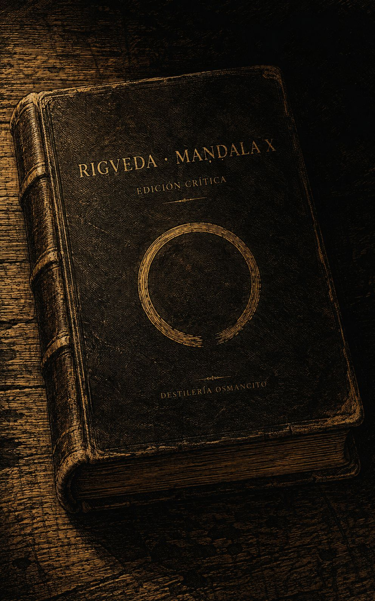
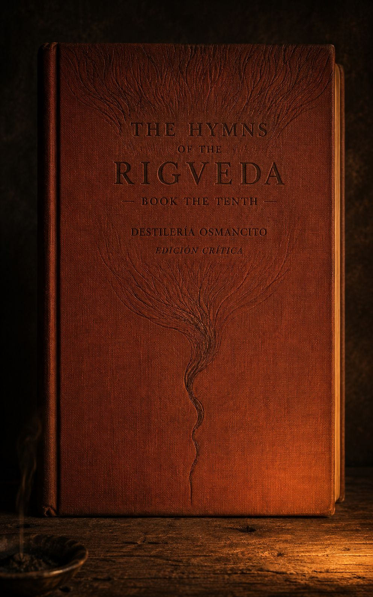
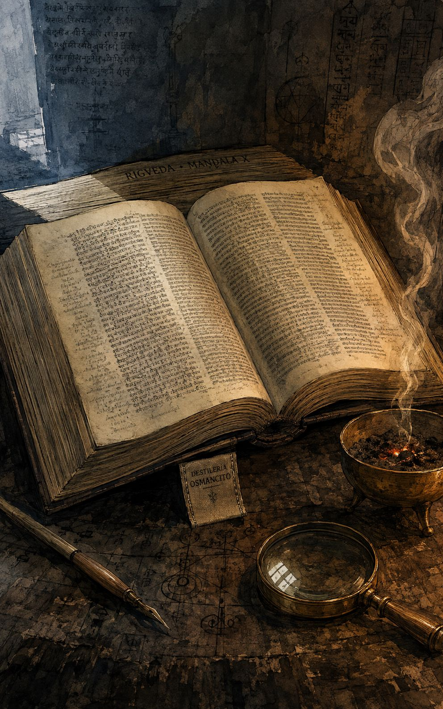
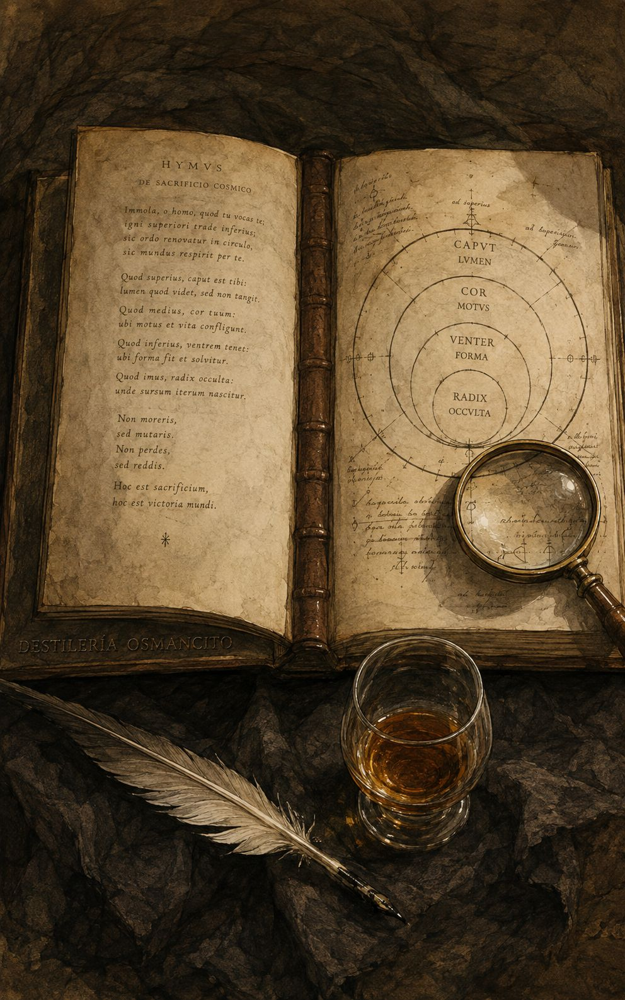
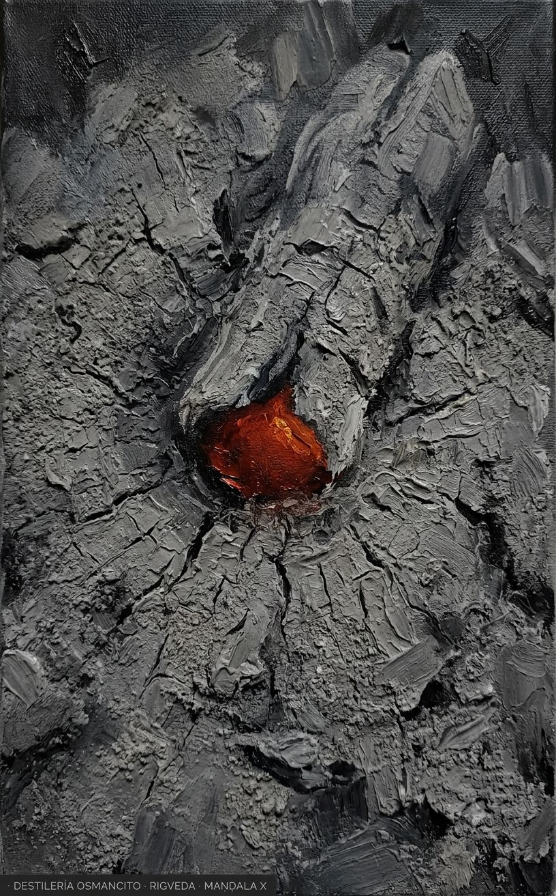
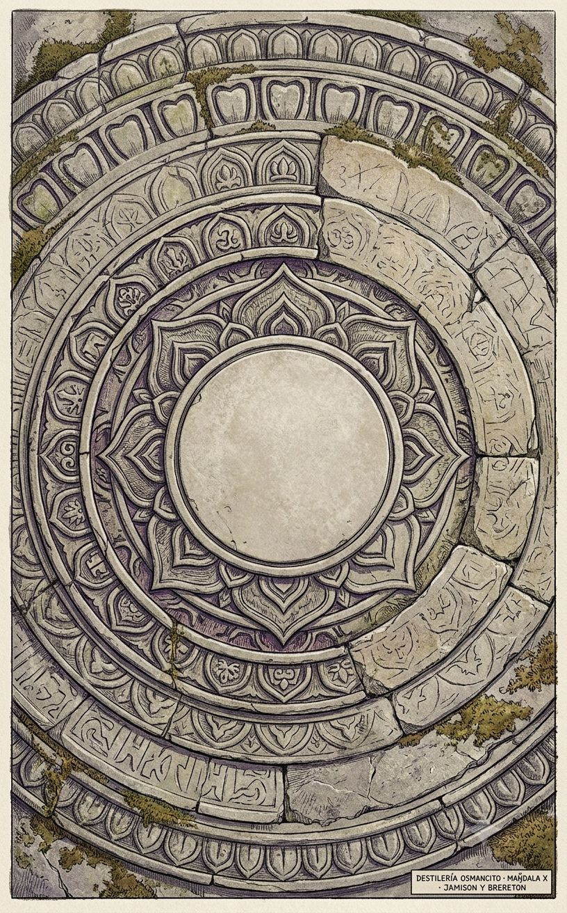
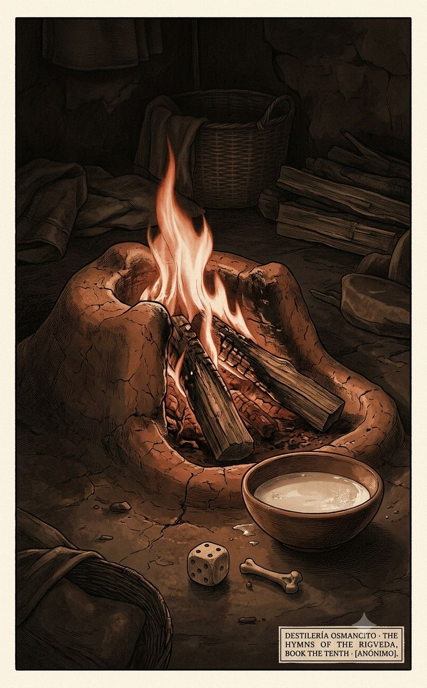
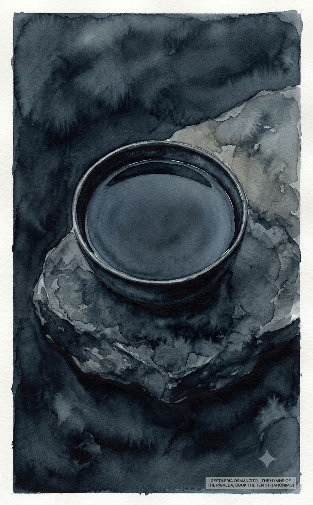
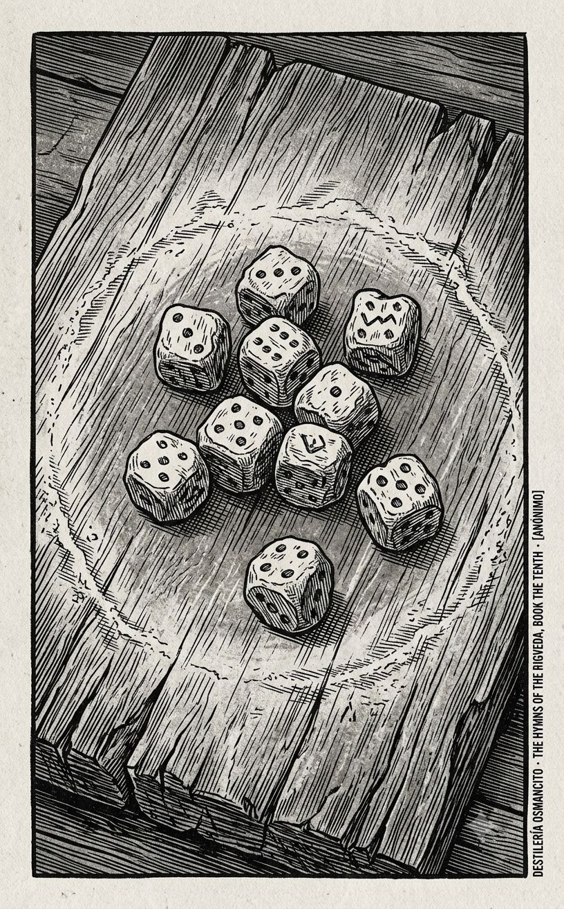

Este libro no cuenta una historia: la interrumpe. Empieza en llamas domésticas —una lumbre que ilumina cada casa humana— y en algún punto, sin aviso ni transición, se pregunta si el mundo existe. Nadie responde. El texto sigue rezando como si la pregunta no se hubiera hecho, y esa es la tensión que sostiene las 191 piezas: un pueblo que invoca con total certeza a dioses cuya existencia, en el centro exacto del libro, se atreve a poner en duda.
Llega denso y repetido, un bloque de invocaciones que pesa como algo rezado en voz alta durante generaciones antes de ser escrito.
Esto no es un poema: es un turno de habla que se repite ciento noventaiún veces sin que nadie lo interrumpa. El corpus no narra —invoca, y la invocación no busca convencer a quien lee, busca convocar a quien no está en la página. Nombrar lo que este texto es —letanía ritual acumulada, no relato con arco— importa más que resumir lo que dice, porque lo que dice cambia de himno en himno mientras lo que hace permanece idéntico: llamar.
Título — The Hymns Of The Rigveda, Book The Tenth Autor — Autoría Colectiva Y Anónima (Tradición Védica; Múltiples Rishis) Año — Composición Oral Estimada Entre 1500 Y 1200 A. C.; Esta Edición Inglesa Publicada En 2014 (Jazzybee Verlag) Género — Poesía Religiosa Ritual (Himnario) Extensión estimada — Aproximadamente 53.900 Palabras, 216 Páginas Estimadas (250 Palabras/Página), 191 Himnos Idioma original — Sánscrito Védico Palabra más frecuente con contenido — Indra (375 Apariciones). No Coincide Con Lo Que El Título Sugeriría: Un Lector Que Llega Esperando Un Libro Centrado En Agni —Que Abre La Colección Y Aparece En Más Himnos Individuales— Encuentra En Cambio Que El Nombre Que Más Veces Resuena Es El Del Dios Guerrero De La Tormenta. El Libro Empieza Con Fuego Y Late Con Trueno.
El Libro Décimo del Rigveda reúne ciento noventaiún himnos dirigidos a un panteón de divinidades védicas, organizados sin arco narrativo pero con acumulación temática: comienza con invocaciones extensas a Agni, se puebla de plegarias a Indra, Soma, los Asvins y las aguas, y hacia su tramo final concentra las piezas más filosóficamente extrañas de toda la colección —el sacrificio cósmico de Purusha, la especulación sobre el origen del universo, el diálogo entre los gemelos Yama y Yami, el lamento del jugador de dados. No hay protagonista humano: los himnos son actos de habla dirigidos hacia afuera, hacia entidades que deben ser persuadidas, alimentadas y alabadas para que el mundo siga funcionando.
Agni — Dios Del Fuego Ritual Y Mensajero Entre Hombres Y Dioses; Abre La Colección. Indra — Dios Guerrero Del Trueno Y La Lluvia; La Presencia Más Invocada Del Libro. Soma — Dios Y Sustancia Ritual, La Bebida Sagrada Ofrecida En El Sacrificio. Purusha — El Ser Cósmico Primordial, Desmembrado Por Los Dioses Para Formar El Universo Y Las Castas. Yama Y Yami — Gemelos Primordiales; Él Se Convierte En Señor De Los Muertos, Ella Le Propone Unión Y Es Rechazada. Varuna Y Mitra — Guardianes Del Orden Cósmico Y La Verdad Jurada. Vak — La Palabra Personificada, Que Habla En Primera Persona Y Se Declara Anterior A Los Dioses.
El libro no tiene trama en el sentido narrativo, pero sí un territorio recorrido con intención. Se abre con una secuencia extensa de himnos a Agni (I–XI), el fuego doméstico y ritual que sirve de mensajero entre el mundo humano y el divino; estos himnos establecen el registro base de toda la colección —invocación, alabanza, petición de bienes concretos: ganado, hijos, protección. A partir de ahí el libro se dispersa hacia decenas de divinidades —Indra, Soma, los Asvins, Pusan, las Aguas, Brhaspati— repitiendo el mismo gesto ritual con variaciones de destinatario.
Dentro de esa repetición aparecen piezas que rompen el molde y concentran la fuerza filosófica del libro. El Himno X (Yama y Yami) dramatiza un diálogo entre hermanos gemelos donde ella, Yami, propone unión sexual invocando la necesidad de perpetuar a la humanidad, y él, Yama, rechaza el vínculo por ser transgresión de parentesco —el primer relato de un límite moral siendo nombrado y sostenido pese a la presión del deseo y la necesidad. El Himno XVIII acompaña un funeral: instrucciones rituales para separar a los vivos de los muertos, para que la viuda se levante del lado del cadáver y regrese al mundo de los vivos, y para sellar la tierra sobre el difunto. El Himno XXXIV es la confesión de un jugador de dados, arruinado por su vicio, que ha perdido esposa, familia y hogar y aun así siente el llamado del juego como un amante irresistible —la pieza más intimista y menos ritual del corpus. El Himno XC narra el sacrificio de Purusha, el ser cósmico primordial, cuyo cuerpo desmembrado por los dioses da origen a los cuatro varnas (castas), a los animales, a los himnos védicos mismos y a las regiones del cosmos —la cosmogonía que ancla el orden social védico en un acto de violencia fundacional. El Himno CXXIX (Nasadiya Sukta, “Himno de la Creación”) es el punto de quiebre filosófico del libro: pregunta qué había antes de la existencia y el no-existencia, afirma que ni siquiera la muerte existía entonces, y termina reconociendo que quizás ni el propio origen del universo conoce su origen. El Himno CXXV da voz a Vak, la Palabra personificada, que habla en primera persona y se proclama sostén de los dioses mismos, anterior y superior a ellos. El libro cierra con el Himno CXCI, un llamado explícito a la unidad de pensamiento y propósito entre quienes participan del rito —un cierre coral, no conclusivo.
Primer contacto. Arde parejo, como una lumbre que no busca consumir sino durar. El libro no convence, invoca; no argumenta, repite; y en esa repetición uno empieza a sentir el peso de generaciones pidiendo lo mismo —ganado, hijos, protección, lluvia— hasta que, sin aviso, el fuego se apaga un instante y alguien pregunta si acaso hubo algo antes del fuego. Nadie contesta. El libro sigue rezando.
Certeza ritual contra duda cosmológica — el corpus invoca a los dioses con total confianza en casi todos sus himnos, y sin embargo en su centro exacto se permite preguntar si el origen del mundo es siquiera cognoscible, incluso para los dioses mismos. Ninguna de las dos posturas cancela a la otra; conviven sin resolverse.
Lo doméstico como escala de lo cósmico — ganado, leche, dados, un hogar de fuego: los mismos objetos pequeños que organizan la vida diaria son también el material con que el libro construye sus imágenes más vastas (el cuerpo desmembrado que se vuelve universo, la Palabra que sostiene a los dioses). El libro nunca separa lo íntimo de lo cósmico; los hace hablar en el mismo aliento.
El límite que se nombra para sostenerse — el rechazo de Yama a Yami, el jugador que confiesa su ruina sabiendo que volverá a jugar, la viuda a la que se ordena levantarse y volver a vivir: el corpus vuelve, en sus piezas menos rituales, sobre el instante en que un límite humano se declara en voz alta, no porque sea fácil de sostener sino precisamente porque no lo es.
191 himnos, traducción de Ralph T. H. Griffith. Versión sin el mapa de tensiones: únicamente destello y joyas de cada estuche..
Un fuego que nace ya sabiendo su oficio: apenas llega, es mensajero entre dioses y hombres, sin infancia real. El himno lo celebra por lo que hace, no por lo que es —y en esa distinción está toda la teología védica del fuego doméstico.
El hijo que nace rugiendo, no llorando.
El nacimiento que ya es función. No hay quiebre entre el nacer y el actuar: el himno dice que Agni, apenas nacido, ya sale “rugiendo” de entre sus Madres, dominando las tinieblas de la noche en el mismo movimiento que lo trae al mundo. Es la imagen de una fuerza que no necesita aprender a ser lo que es —nace consumada, y esa instantaneidad es precisamente lo que la vuelve digna de veneración: no crece hacia el poder, lo porta desde el primer instante.
El dios que recuerda lo que el hombre olvida.
El fuego como sustituto de la memoria colectiva. Hay una admisión incómoda enterrada en medio del himno: los mortales, débiles de mente, simplemente no piensan en sacrificar cuando deberían. En lugar de sancionar esa negligencia, el texto la resuelve delegándola —Agni, “sabio y hábil en asignar a cada dios su estación”, hará lo que los hombres olvidan hacer. Es un reconocimiento antiguo y muy humano: toda institución religiosa termina inventando una figura que recuerda por nosotros lo que nuestra propia atención no alcanza a sostener.
Vencer a la noche con hermosura, no con fuerza.
La conquista de la Noche por la Mañana. El himno no dice que Agni combate a la oscuridad: dice que la “vence con belleza”. Es una idea rara para una tradición guerrera —que lo luminoso no aniquila lo oscuro sino que lo seduce, lo envuelve en vestidos blanquecinos y lo desplaza sin violencia. Queda la imagen de una victoria que no deja cadáver, solo un cambio de ropa.
El fuego que lame, traga y besa como dueño de casa.
La confesión de la ignorancia humana ante el fuego sabio. Después de admitir su propia necedad frente al fuego sabio, el himno da un giro extrañamente físico: describe a Agni moviéndose, lamiendo, tragando, y —como Señor de la Casa— besando a la Doncella Juvenil. Es una imagen que mezcla lo litúrgico con lo íntimo sin aviso, y sobrevive precisamente por esa mezcla: el fuego sagrado tratado con la familiaridad de un miembro más del hogar, con apetito y con afecto.
Como ladrones que arriesgan la vida en el bosque.
El fuego-ladrón amarrado por diez cinturones. La comparación llega sin anuncio: Agni es como ladrones que arriesgan la vida y merodean el bosque, y los sacerdotes lo han “asegurado” con diez cinturones, como a algo peligroso que debe contenerse. Es una imagen que no encaja con la piedad esperada del himno —el fuego sagrado descrito con el vocabulario del delito— y por eso mismo se queda.
El Pájaro que habita en medio de la fuente.
El pájaro oculto en la fuente. La imagen llega sin glosa: un Pájaro habita en medio de la fuente, mientras el Mar-guardián-de-tesoros se esconde en el seno de una pareja secreta. Ninguna explicación sigue. El himno mismo confiesa por qué: los sabios “guardan los nombres más altos ocultos dentro de ellos” — el enigma no es un accidente de traducción o de época, es la forma elegida a propósito, y sobrevive por eso: es una imagen que se sabe imposible de agotar.
No-Ser, Ser en el cielo más alto.
El No-Ser dentro del Ser. En una sola línea el himno hace algo que ninguna lógica posterior permitiría con comodidad: declara que Agni es “No-Ser, Ser en el cielo más alto”, nacido en el vientre de Aditi y en el lugar de nacimiento de Daksa. Es el tipo de frase que un lector reconoce como límite del lenguaje mismo —el intento de nombrar algo anterior a la distinción entre existir y no existir— y que ninguna paráfrasis mejora.
Como un corcel que nunca tropieza ni se equivoca.
El corcel que nunca tropieza. La comparación es simple y por eso perdura: Agni llega a sus amigos con la misma fiabilidad de “un corcel veloz que nunca tropieza ni se equivoca”. No hay dios abstracto en esa imagen sino la sensación reconocible de confiar en algo que jamás falla —el tipo de certeza que cualquiera querría poder atribuirle a un aliado.
Mi Pariente, mi Padre, mi Hermano, mi Amigo.
El fuego como parentesco elegido. En medio de una serie de himnos que tratan a Agni como función y oficio, aparece de pronto una declaración personal: “Considero a Agni mi Pariente y mi Padre, lo cuento como mi Hermano y mi Amigo para siempre.” Es el gesto reconocible de quien, ante algo que lo sostiene sin condiciones, agota todas las palabras de parentesco disponibles porque ninguna basta sola —y termina llamándolo, simplemente, con todas a la vez.
Tres cabezas, siete rayos, un ganado recuperado.
La irrupción del mito de Trita. Sin aviso, un himno dedicado a Agni se convierte en relato de guerra: Trita, escondido en una caverna, instigado por Indra, enfrenta a un enemigo de siete rayos y tres cabezas. Indra remata la escena partiéndole las tres cabezas del cuerpo y liberando el ganado robado. Es la clase de giro que un lector recordaría —un himno litúrgico que de pronto se vuelve escena de combate, con cifras concretas (siete rayos, tres cabezas) y un botín recuperado al final.
Un himno breve que pide, sobre todo, absolución: que las aguas se lleven el pecado, la mentira, el juramento falso —como si el agua purificara no el cuerpo sino la biografía entera de quien la bebe.
Si he mentido o jurado en falso, llévenselo las aguas.
El agua como confesionario. En medio de peticiones rituales por salud y fuerza aparece, sin ceremonia, una lista concreta de faltas: pecado, mal cometido, mentira, juramento falso. El himno no pide perdón en abstracto —enumera exactamente qué quiere que el agua se lleve. Es reconocible en cualquier época: la fórmula ritual que de pronto se vuelve confesión personal.
Una hermana le propone a su hermano gemelo tener descendencia juntos, invocando el vínculo cósmico que los une; él se niega apelando al tabú, y ella insiste con una honestidad que no disminuye. Es el diálogo más incómodo y más humano del Libro X: dos voces que discuten, no un coro que alaba.
Como ruedas de carro que se apresuran a encontrarse.
La insistencia física de Yami. Cuando el argumento cósmico no basta, Yami abandona la teología y apela directamente al cuerpo: quiere descansar junto a Yama, ofrecerse como esposa, “apresurarse como ruedas de carro” el uno hacia el otro. Es un giro de registro brutal dentro del himno —de la invocación a los Inmortales a la urgencia física desnuda— y funciona precisamente porque no se disfraza de argumento.
Como la enredadera que ciñe al árbol.
El rechazo reiterado y la resignación. Yama compara el vínculo que rechaza con una enredadera que ciñe un árbol —y le pide a Yami que busque esa clase de abrazo en otro. La imagen vegetal, física y silenciosa, dice más que cualquier argumento sobre el tabú: hay afectos que necesitan enredarse en algo, y Yama simplemente redirige el objeto, sin negar la necesidad misma.
Este capítulo no cristaliza en joya recuperable: opera por fórmulas de invocación y confianza que sostienen el ritual sin producir una imagen o giro que sobreviva fuera de su contexto ceremonial.
¿Nos ha tomado el Rey? ¿Quién lo sabe?.
La pregunta sin respuesta sobre el Rey enojado. En medio de un himno de fórmulas litúrgicas seguras, aparece una grieta de duda genuina: “¿Nos ha tomado el Rey? ¿Cómo hemos ofendido? ¿Quién lo sabe?” Nadie responde. El himno sigue adelante sin resolver la pregunta, y esa misma falta de respuesta es lo que la vuelve reconocible —la sensación exacta de no saber por qué algo salió mal, ni a quién preguntarle.
Eligió la muerte antes que la vida eterna.
La muerte elegida de Brhaspati. La frase llega sin preparación ni glosa: “Eligió la muerte como su porción. No eligió, para bien de los hombres, una vida eterna.” Es una inversión del deseo esperado —renunciar a la inmortalidad, y hacerlo por el bien de otros— condensada en dos líneas que no necesitan más contexto para golpear: alguien elige morir para que la muerte, de algún modo, sirva a los vivos.
Supera a los dos perros de cuatro ojos.
El envío del muerto hacia los dos perros. La instrucción al difunto es extrañamente precisa: correr, superar a los dos perros de Sarama, “atigrados, de cuatro ojos”, que vigilan el camino. No son monstruos que impedir vencer sino guardianes que hay que superar en velocidad, casi en una carrera. La imagen sobrevive por su rareza concreta —cuatro ojos, camino feliz, una carrera contra los perros del más allá— algo que ninguna doctrina abstracta sobre la muerte logra transmitir con la misma nitidez.
No nos castiguéis por lo que hicimos por debilidad humana.
El pedido de no castigo por debilidad humana. Entre fórmulas de invitación ritual, aparece una petición que no necesita traducción de época: “no nos castiguéis por ningún pecado que hayamos cometido por debilidad humana.” No es un pecado deliberado lo que se confiesa, sino la fragilidad misma de ser humano —y esa distinción, pedida a los propios ancestros, es reconocible en cualquier tradición que haya intentado hacer las paces con quienes ya no están.
Un himno funerario que le habla al fuego como a un ejecutor cuidadoso: que no consuma del todo, que madure al muerto como se madura un alimento, que lo entregue intacto a los Padres. La cremación descrita no como destrucción sino como tránsito cocinado.
El Sol reciba tu ojo, el Viento tu espíritu.
El reparto del cuerpo entre los elementos. La instrucción es tan concreta que roza el inventario: el ojo va al Sol, el espíritu al Viento, y luego, según la suerte de cada uno, el resto del cuerpo a la tierra, al cielo, a las aguas, a las plantas. No hay metáfora de disolución genérica —hay una distribución órgano por órgano, elemento por elemento, del ser humano de vuelta al mundo que lo compone.
Dos fuegos: uno se destierra, el otro se elige.
La separación de los dos Agnis. El himno hace algo que ninguna teología simple permitiría: separa a Agni en dos entidades funcionales dentro del mismo ritual —el “Agni que devora carne”, enviado lejos hacia los dominios de Yama cargando las impurezas, y “este otro Jatavedas”, elegido para portar la ofrenda a los dioses. Es la clase de solución práctica que un lector reconoce de inmediato: cuando una sola fuerza cumple funciones contradictorias, se la divide en dos, y a cada mitad se le asigna su tarea.
Un himno que empieza con un rapto mitológico —la madre de Yama desaparece, sustituida por una copia mientras la verdadera se oculta— y termina como plegaria de viaje para el difunto, guiado por Pusan a través de caminos que ya conoce de memoria.
Hicieron una igual a ella, y la entregaron en su lugar.
La sustitución de la Dama Inmortal. La escena es escueta y perturbadora: la verdadera esposa de Vivasvan desaparece ante los hombres, y en su lugar “hicieron una igual a ella” para entregarla como sustituta. Nadie explica el engaño ni sus consecuencias inmediatas —el himno sigue de largo. Es una imagen que sobrevive por lo que no dice: la sustitución de una persona por su copia, aceptada sin más comentario que el hecho mismo.
Un himno funerario que primero le ordena a la Muerte “vete, sigue tu propio camino” y luego, sin transición, le habla directamente a una viuda: “levántate, ven al mundo de los vivos, mujer; ven, él está sin vida junto a quien yacías.” Es de los pasajes más directos del corpus sobre la separación entre los vivos y los muertos.
Levántate, ven al mundo de los vivos, mujer.
La viuda que debe volver a la vida. El giro es brusco y sin aviso: de expulsar a la Muerte del territorio de los vivos, el himno pasa a dirigirse a una viuda concreta, tendida junto al cadáver: “levántate, ven al mundo de los vivos, mujer: ven, él está sin vida junto a quien yacías.” No hay eufemismo ni suavización —es una orden de separarse del cuerpo y regresar a la vida, con la crudeza exacta de quien tiene que decírselo a alguien en shock.
Cúbrelo como una madre envuelve a su hijo con su falda.
La tierra como madre que cubre. La petición a la tierra no es de protección abstracta sino de un gesto materno específico: que lo cubra “como una madre envuelve a su hijo con su falda.” Es la clase de imagen que cualquiera reconoce sin necesitar el contexto ritual —el gesto de arropar, trasladado de la cuna a la tumba sin perder ternura.
Este capítulo no cristaliza en joya recuperable: la repetición ritual de la súplica por el ganado funciona como fórmula de invocación, sin imagen ni giro que sobreviva fuera de su función.
Un camino negro y blanco y rojo, y rayado, y carmesí.
El retrato por rasgos sueltos. En vez de describir a Agni con epítetos abstractos, el himno detalla el camino que recorre como una superficie de colores concretos: “negro y blanco y rojo, y rayado, y marrón, carmesí, y glorioso.” Es una paleta, no una metáfora —y por eso se queda: uno puede casi ver el fuego irregular, cambiante, en el simple listado de sus tonos.
Un Toro eres cuando bramas, e impregnas a las Hermanas.
El crecimiento repetido como estribillo. Después de nueve estrofas casi idénticas en su estructura de alabanza ritual, el himno cierra con una imagen inesperadamente física: Agni como Toro que brama y “impregna a las Hermanas”. El estribillo repetido —“tú estás creciendo grande”— culmina literalmente en ese gesto de fecundación, dándole un final concreto y hasta chocante a lo que hasta entonces había sido pura fórmula.
Sin rito, vacío de sentido, que guarda leyes ajenas.
El enemigo sin ley. La descripción del Dasyu no apela a la fuerza o el número sino a la extrañeza radical: “riteless, void of sense, inhuman, keeping alien laws.” Es el retrato más antiguo y reconocible de la alteridad hostil —no el enemigo poderoso, sino el que no comparte ninguna categoría común con quien lo describe, y por eso mismo resulta más temible que cualquier ejército.
Este capítulo no cristaliza en joya recuperable: opera por fórmulas de alabanza guerrera convencional, sin imagen que se sostenga fuera de su función encomiástica.
Separaron el mundo unido, y todos los Dioses se lamentaron.
La separación forzada del mundo unido. La imagen es cosmogónica pero suena doméstica: los Asvins, implorados por un mortal, “forzaron aparte el par” que estaba unido —y la reacción no es celebración sino lamento generalizado: “todos los Dioses se quejaron.” Es un raro momento en que un mito de creación se presenta no como triunfo sino como arrepentimiento colectivo por un daño ya hecho, con la súplica inmediata de deshacerlo.
Sé gracioso como padre a hijo.
El mismo estribillo, la súplica más íntima. Entre peticiones rituales de riqueza y protección aparece una frase de vulnerabilidad simple: “aunque descuide tus leyes por mi simplicidad, sé gracioso conmigo, como un padre a su hijo.” No pide fuerza ni ganado —pide la clase de indulgencia que solo un padre concede, y la pide sabiendo de antemano que va a fallar.
Nunca ha de ser engañado.
El acompañante fiel del camino. Entre los muchos epítetos que el himno acumula sobre Pusan, uno se distingue por su llaneza: “ne’er to be deceived” — nunca ha de ser engañado. En un mundo lleno de riesgos rituales y caminos peligrosos, la promesa más simple y más deseada es esa: alguien a quien nadie puede engañar, guiándote.
El zorro se acerca sigiloso al león que se aproxima.
El enigma sin resolver de las bestias invertidas. El himno propone, y llama explícitamente “riddle”, una serie de inversiones naturales: los ríos fluyen hacia atrás, el zorro se acerca al león en vez de huir, el chacal ahuyenta al jabalí. Ninguna solución se ofrece dentro del texto. La imagen sobrevive precisamente por eso —es un acertijo genuino, de los que se quedan dando vueltas porque el propio poema se negó a resolverlo.
Siete héroes ascendieron, ocho llegaron juntos, nueve armados de cestas.
La escena onírica final: siete héroes, ocho, nueve, diez. La secuencia numérica no explica nada, solo cuenta: siete desde abajo, ocho desde arriba, nueve con cestas de aventar, diez presionando sobre la roca. Es una escena que funciona como visión más que como relato —el tipo de imagen que aparece en sueños, con una lógica interna que no necesita ser descifrada para sentirse cargada de significado.
Mi suegro solo no ha venido.
El suegro ausente. En medio de una serie de himnos grandilocuentes a Indra, aparece esta línea de una llaneza casi cómica: todos los amigos están reunidos, pero el suegro, específicamente, no llegó. No hay cosmología ni batalla en esa frase —solo la anotación doméstica y reconocible de una ausencia puntual en una reunión familiar.
El ternero crecerá en fuerza y devorará al toro.
El acertijo de los animales invertidos, otra vez. La inversión final es la más extrema de la serie: no solo lo pequeño supera a lo grande, sino que “el ternero crecerá en fuerza y devorará al toro” —la cría consumiendo al padre. Es una imagen que incomoda por diseño, llevando el acertijo de las inversiones naturales a su versión más perturbadora: el hijo que se traga al progenitor.
Este capítulo no cristaliza en joya recuperable: las preguntas retóricas sostienen el tono de súplica sin producir una imagen aislable que sobreviva fuera de su contexto ritual.
Como las doncellas se inclinan ante el galán que llega con amor.
El cortejo entre el sacerdote y las Aguas anhelantes. El ritual de libación se describe, sin rodeos, como cortejo: “así las doncellas se inclinan ante el joven galán que llega con amor hacia quienes anhelan encontrarlo.” Es una comparación que vuelve tangible lo abstracto —el oficiante y el elemento sagrado descritos con la misma anticipación mutua que dos personas que se desean, “de un corazón acorde y de un deseo”.
¿Qué árbol, qué madera, produjo la Tierra y el Cielo?.
La pregunta por el árbol original. En medio de fórmulas de bendición doméstica, el himno se detiene y pregunta, sin ironía ni respuesta preparada: “¿qué árbol, qué madera, en verdad, lo produjo, de la cual formaron la Tierra y el Cielo?” Es una pregunta que cualquier niño podría hacer y que ningún adulto puede responder del todo —y el himno la deja exactamente así, abierta, sin fingir una solución que no tiene.
Escondido, chupó el pecho de su Madre; aún en su juventud, la vejez ha venido sobre él.
El bebé que envejece mientras aún mama. Sin transición ni explicación, el himno describe a alguien —probablemente Agni mismo, en una de sus identidades más crípticas— que todavía mama del pecho materno y ya está envejeciendo. Es una imagen que colapsa el tiempo de una vida entera en un instante imposible, y precisamente por no intentar resolver la paradoja, se queda grabada: la infancia y la vejez ocurriendo a la vez, en el mismo cuerpo.
Las costillas me duelen como esposas rivales.
Las costillas que duelen como esposas rivales. La comparación es extraña y precisa a la vez: el dolor físico de las costillas descrito como el tormento de convivir con esposas rivales. No es una metáfora decorativa —es la clase de imagen que solo alguien que ha vivido ambos dolores, el corporal y el doméstico, podría haber elegido para describir el otro.
La confesión de un jugador compulsivo, 3.500 años antes de que existiera esa palabra: pierde a su esposa, a su familia, a su hogar, y aun así vuelve a la casa de juego “como una muchacha enamorada busca el lugar de encuentro”. Es, verso por verso, el retrato más moderno de todo el Libro.
Más querido para mí el dado que nunca duerme que el trago del Soma.
El dado amado más que la esposa. La confesión inicial ya lo dice todo: prefiere el dado que nunca duerme al trago sagrado de Soma, y por esa preferencia alienó a su propia esposa devota. No hay excusa ni justificación religiosa —solo el reconocimiento desnudo de haber elegido el vicio sobre el vínculo, hace más de tres mil años, con una honestidad que ninguna confesión moderna mejora.
Como una muchacha enamorada busco el lugar de encuentro.
El regreso compulsivo pese a la resolución. Después de jurar dejar de jugar, después de perder amigos y familia, el jugador admite que apenas suena el dado castaño sobre el tablero, corre hacia el lugar de encuentro “como una muchacha enamorada”. Es la imagen exacta de la recaída —el sonido que dispara el deseo antes que la voluntad pueda intervenir— descrita con una precisión emocional que cruza intacta tres milenios.
Ahí está tu ganado, ahí tu esposa, oh jugador.
El consejo final y la súplica de tregua. El himno termina con un consejo tan simple que duele: deja los dados, cultiva tu campo, “ahí está tu ganado, ahí tu esposa” —todo lo que ya tenías, esperando, si tan solo pudieras parar. La distancia entre ese consejo obvio y la imposibilidad de seguirlo es, precisamente, el retrato completo de la adicción.
Este capítulo no cristaliza en joya recuperable: la fórmula repetitiva sostiene la función ritual sin producir imagen aislable.
Savitar desde el este y el oeste, Savitar desde el norte y el sur.
El catálogo cósmico de protectores. El cierre del himno abandona la enumeración de dioses distintos y se concentra en un solo nombre repetido cuatro veces, una por cada dirección: “Savitar, Savitar desde el este y el oeste, Savitar, Savitar desde el norte y el sur.” Es el tipo de repetición que funciona por pura insistencia rítmica —invocar tanto un nombre que termina llenando el espacio entero, las cuatro direcciones a la vez.
Todo lo demás encuentra reposo: las aguas fluyen, el Sol siempre asciende.
El ojo que nunca cesa de moverse. La observación es simple y certera: incluso las aguas, en su fluir constante, tienen un ritmo de descanso —pero el Sol asciende siempre, sin pausa. Es una imagen que cualquiera puede verificar con solo mirar el cielo, y que el himno convierte en la prueba misma de la naturaleza divina de Surya: lo único verdaderamente incesante en un mundo de ciclos.
Este capítulo no cristaliza en joya recuperable: la brevedad y función puramente petitoria no producen imagen aislable.
Liberaron a la codorniz tragada por el lobo.
El rescate de la codorniz tragada. Entre las grandes hazañas de rejuvenecimiento y curación, aparece esta imagen diminuta y precisa: una codorniz, tragada por un lobo, devuelta a la libertad. No hay grandeza cósmica en el gesto —solo el rescate puntual y casi tierno de la criatura más pequeña posible, que sobrevive en la memoria precisamente por su escala minúscula frente a las demás hazañas del himno.
Sálvenme antes de que sea demasiado tarde, de esta mi maldición.
El catálogo de curaciones milagrosas. Tras enumerar rescates ajenos, el poeta por fin pide para sí mismo, y lo hace con urgencia desnuda: “sálvenme antes de que sea demasiado tarde, de esta mi maldición.” Después de tantos ejemplos de otros salvados a tiempo, esa frase final suena como el temor genuino de quien ha visto ayudar a muchos y teme no llegar a tiempo para sí mismo.
¿Dónde están de noche? ¿Quién los ha detenido?.
La pregunta errante por el paradero del carro. El himno entero gira en torno a una incertidumbre genuina sobre el paradero de los dioses —de noche, de día, en cada casa que visitan— sin ofrecer nunca una respuesta satisfactoria. Es una forma extrañamente moderna de devoción: no la certeza de la presencia divina, sino la pregunta perpetua por dónde estará esta vez.
Este capítulo no cristaliza en joya recuperable: la brevedad ritual no deja espacio para imagen memorable.
Por juego superior gana ventaja, como un jugador que apila sus ganancias.
El jugador cósmico que siempre gana. Tras el himno de los dados (XXXIV), donde el juego era ruina humana, aquí el mismo vocabulario se aplica a Indra sin ironía aparente: él también “juega”, pero siempre gana, apilando sus ganancias con destreza celestial. La yuxtaposición con el himno del jugador arruinado, unas páginas antes, vuelve esta imagen más resonante —el mismo vicio humano, elevado a atributo divino.
Como un jugador apila sus ganancias, así ganó el Sol.
El sol ganado como apuesta. La imagen del himno anterior encuentra aquí su versión más extrema: Indra no solo juega y gana como un tahúr afortunado, sino que su premio es el Sol mismo, arrebatado “como en el juego un jugador apila sus ganancias.” Es la apuesta más alta imaginable, descrita con el vocabulario más llano posible —el lenguaje del garito aplicado a la cosmogonía.
Fijó las montañas mientras temblaban; Dyaus tronó y el aire se sacudió.
El toro que sacude las montañas. La imagen de estabilidad cósmica llega, paradójicamente, a través del temblor: las montañas se fijan mientras aún tiemblan, el cielo truena, el aire se sacude. No es una escena de calma impuesta sino de orden logrado en medio del caos activo —la sensación de que el mundo se estabiliza no a pesar de la violencia sino a través de ella.
Primero desde el Cielo, luego de nosotros, luego en las aguas.
El triple nacimiento de Agni. La genealogía es precisa y extraña: Agni nace tres veces, en tres lugares distintos —del cielo, de los hombres, de las aguas— sin que ninguno de los tres nacimientos anule a los otros. Es una manera de pensar la divinidad que evita la pregunta binaria de origen único, y en cambio afirma que algunas fuerzas simplemente nacen varias veces, en varios lugares, sin contradicción.
Como una criatura perdida seguida por sus huellas.
La búsqueda del fuego oculto. La imagen convierte al fuego sagrado en algo extraviado, buscado con la misma paciencia que se sigue el rastro de un animal perdido. Es una humanización notable de lo divino —no un dios que se manifiesta a voluntad, sino algo que debe ser rastreado, encontrado “escondido donde se reúnen las inundaciones”, con esfuerzo y anhelo genuinos.
Tu mano derecha hemos tomado en las nuestras.
La mano tomada, la riqueza repetida. El gesto inicial es simple y físico: tomar la mano derecha del dios, como quien sella un pacto de confianza entre iguales. Antes de cualquier lista de riquezas pedidas, está ese gesto táctil —la mano tomada— que vuelve concreta y personal una relación que de otro modo quedaría en pura fórmula.
Yo fui el primer poseedor de todo el equipo precioso.
El discurso en primera persona del dios. Es raro en el corpus que el propio dios tome la voz narrativa sin mediación del poeta. Indra habla de sí mismo con una seguridad que roza la jactancia: fue el primer poseedor de toda riqueza, y las criaturas lo llaman “como a un Padre”. Ese giro de voz —de la súplica humana a la autoafirmación divina— cambia por completo el registro del himno, y funciona precisamente por su descaro.
¿Prevalecerán tres contra mí? Los trillo como gavillas.
El desafío triple superado en soledad. La escalada es clara y brutal: uno, luego dos, ahora ¿tres oponentes juntos? La respuesta de Indra no es preocupación sino desdén absoluto —los trilla “como muchas gavillas sobre el suelo”. Es la imagen de una confianza que no necesita justificarse, comparando el combate contra múltiples enemigos con la tarea doméstica y repetitiva de trillar grano.
Puse en las vacas la leche blanca que ni Tvastar había puesto allí.
El catálogo bélico narrado en primera persona. Entre listas de enemigos derrotados, aparece una afirmación distinta: Indra dice haber colocado la leche en las ubres de las vacas, algo que “ni siquiera Tvastar mismo” —el dios artesano por excelencia— había hecho. Es una manera de reclamar superioridad no por fuerza destructiva sino por un acto de generosidad fértil que ni el más hábil de los dioses había pensado en realizar.
Este capítulo no cristaliza en joya recuperable: la brevedad y el tono puramente laudatorio no producen imagen aislable.
Huyó como el toro salvaje huye de la cuerda del arquero.
El fuego que huye del sacrificio. Es un giro casi impensable dentro de la teología védica: el propio Agni, la fuerza que sostiene todo sacrificio, temió tanto ser “comprometido” por los dioses que huyó y se escondió, disperso “en muchos lugares” como plantas y aguas. La comparación final —huir “como el toro salvaje huye de la cuerda del arquero”— vuelve física y reconocible una idea que de otro modo sería pura abstracción teológica: hasta lo sagrado, a veces, quiere escapar de su propio deber.
Trescientos treinta y nueve deidades lo sirvieron y honraron.
La pregunta del sacerdote novato. La cifra exacta —trescientas treinta y nueve deidades— rompe la vaguedad habitual de “todos los dioses” con una precisión casi administrativa. Es la clase de detalle numérico que un lector recuerda precisamente porque no se esperaba tanta exactitud en medio de una pregunta tan íntima sobre cómo oficiar correctamente un ritual nuevo.
Agárrense unos a otros y crucen el río; dejemos los Poderes que no trajeron beneficio.
El cruce del río hacia poderes auspiciosos. La instrucción es sorprendentemente concreta y colectiva: tomarse de las manos, sostenerse firmes, y cruzar juntos un río nombrado —el Asmanvati— dejando atrás explícitamente aquello que no sirvió. Es una imagen de comunidad en tránsito, de decisión compartida de abandonar lo que no funciona, que trasciende fácilmente su contexto ritual original.
Todo lo que los hombres llamaron tus batallas era ilusión: ningún enemigo tienes hoy.
La duda retrospectiva sobre la batalla misma. En medio de un himno que celebra las hazañas guerreras de Indra, aparece esta frase que las desmiente: sus batallas eran “ilusión”, nunca tuvo un enemigo real. No hay explicación posterior —la afirmación queda ahí, minando el propio fundamento del himno que la contiene, como una duda que ni el poeta más devoto puede evitar formular del todo.
El que murió ayer hoy está vivo.
El nombre secreto que hizo todo lo que es y será. La frase llega sin preparación conceptual, en medio de imágenes astronómicas: “el que murió ayer hoy está vivo.” Es una declaración sobre el tiempo cíclico —posiblemente referida a la luna, despertada por el “viejo”— que funciona por su brevedad casi paradójica: la muerte y la vida ocurriendo en días consecutivos, como si fueran turnos de un mismo ciclo, no eventos definitivos.
Su descendencia, como un hilo continuamente hilado.
Los Padres que heredaron parte de la grandeza. La imagen final compara la línea genealógica con un hilo que nunca se corta, hilado sin pausa de generación en generación. Es una metáfora textil simple que convierte la abstracción de “descendencia” en algo visualmente continuo —un solo hilo, extendiéndose, sin nudos ni cortes visibles entre un padre y el siguiente.
Este capítulo no cristaliza en joya recuperable: es transición funcional hacia el himno siguiente, sin imagen propia que se sostenga aislada.
Doce estrofas casi idénticas, cada una llamando al espíritu de vuelta desde un lugar distinto —Yama, la tierra, el mar, las montañas, el Sol, “todo lo que es y será”— como si el ritual necesitara nombrar cada rincón posible del cosmos para asegurarse de no dejar ningún escondite sin registrar. Es la version más extensa y exhaustiva de la súplica por la vida en todo el corpus.
Tu espíritu, que se fue lejos a Yama, hacemos que vuelva a ti para que puedas vivir.
El llamado exhaustivo del espíritu disperso. No hay una sola joya aquí sino el efecto acumulado de doce repeticiones casi idénticas, cada una nombrando un destino distinto del espíritu perdido —el mar, las montañas, el sol, “todo lo que es y será”— y llamándolo de vuelta con la misma fórmula exacta. La joya no está en una imagen aislada sino en la insistencia misma: alguien que teme tanto no encontrar el alma extraviada que decide nombrar, uno por uno, todos los rincones del universo donde podría estar escondida.
Medicinas que descienden del cielo, de dos en dos y de tres en tres.
La restauración órgano por órgano. La imagen de las medicinas curativas “descendiendo del cielo, de dos en dos y de tres en tres, o vagando solas por la tierra” convierte la sanación en algo casi meteorológico —un fenómeno natural que cae y se dispersa, no un milagro puntual sino un flujo constante de remedios disponibles para quien sepa buscarlos.
Un himno de curación que termina con una de las imágenes más táctiles del corpus: una mano —“esta mano contiene todos los bálsamos curativos, y esta sana con un toque gentil”— cerrando lo que empezó como alabanza política a un príncipe.
He sujetado tu espíritu, como con una correa de cuero atan el yugo.
El espíritu sujetado como correa de cuero. La comparación transforma la retención del alma —algo abstracto, casi mágico— en un gesto mecánico exacto: atar una correa al yugo del carro, para que no se suelte. Es la clase de imagen que vuelve tangible lo intangible, prestando el vocabulario de la vida cotidiana —herramientas, cuero, carros— a la tarea de mantener a alguien con vida.
Esta mano contiene todos los bálsamos curativos, y esta sana con un toque gentil.
Las manos que curan. El himno entero, con toda su carga política y ritual, termina reducido a la escala más íntima posible: dos manos, una más propicia que la otra, y el simple hecho de tocar con suavidad. Es el gesto humano más elemental de cuidado —la mano sobre el cuerpo enfermo— presentado sin ornamento, como la verdadera fuente de la sanación.
Ordeñaron sin dificultad las rocas que nada habían agitado.
La leche ordeñada de la roca. La imagen desafía la física con total naturalidad: rocas que nunca habían sido movidas, ordeñadas “sin dificultad” como si fueran vacas. No hay explicación del milagro —solo la afirmación tranquila de que ocurrió, dejando al lector con la extrañeza pura de la piedra que da leche.
Este capítulo no cristaliza en joya recuperable: la estructura de estribillo repetido sostiene la función de bendición sin producir imagen aislable.
La Nave celestial bien remada que no deja entrar aguas.
El barco celestial que no deja entrar el agua. Después de dieciséis estrofas de peticiones abstractas de protección, el himno ofrece por fin un objeto concreto en el que depositar esa esperanza: un barco, bien remado, sin fisuras, “que no deja entrar aguas.” Es la imagen perfecta de la seguridad deseada —no la ausencia de tormenta, sino la certeza de que la embarcación resistirá cualquier tormenta que llegue.
¿Nunca, nunca recuerdan este nuestro parentesco?.
El recordatorio del parentesco entre Maruts y hombres. En medio de una lista casi interminable de divinidades invocadas por nombre, aparece esta pregunta vulnerable dirigida específicamente a los Maruts: ¿acaso alguna vez recuerdan el vínculo que los une a los hombres? No es una petición de favores sino el miedo más simple de cualquier relación asimétrica —ser olvidado por quien tiene el poder de recordar o no.
Este capítulo no cristaliza en joya recuperable: la extensión catalogal sostiene la función litúrgica sin producir imagen aislable que sobreviva fuera de la lista.
Que nos concedan hoy amplio espacio y libertad.
La segunda letanía cósmica, casi gemela de la anterior. Después de dos himnos casi idénticos de catálogo divino, la petición final se reduce a algo notablemente simple: espacio y libertad. No riqueza, no victoria —solamente la sensación esencial de tener margen para vivir, pedida dos veces seguidas por el mismo poeta como si necesitara repetirla para creerla.
Dejó al Pani llorando.
La liberación de las vacas encerradas en la roca. El robo del ganado no termina en triunfo silencioso sino en una imagen humana concreta: Brhaspati roba las vacas del Pani “y lo deja llorando.” Es un detalle pequeño en medio de un mito cósmico de liberación, pero es justamente esa nota humana —el llanto del despojado— la que ancla el mito en algo reconocible: toda victoria deja a alguien del otro lado, perdiendo.
Como cebada esparcida de canastas para aventar.
El mismo mito, narrado con imágenes redobladas. La comparación agrícola vuelve doméstica una hazaña cósmica: las vacas liberadas se esparcen “como cebada out of canastas para aventar” —un gesto cotidiano de trabajo campesino aplicado al momento de máxima liberación mítica. Es la clase de imagen que ancla lo sobrenatural en lo que cualquier oyente había visto hacer con sus propias manos.
Hizo un hecho jamás hecho, jamás igualado, por el cual el Sol y la Luna ascienden alternadamente.
El mismo mito, narrado con imágenes redobladas. El himno remata su narrativa mítica con una afirmación cosmológica asombrosa: el propio ciclo del día y la noche, Sol y Luna alternándose, es consecuencia directa de esta única hazaña de Brhaspati. Es la clase de causa-efecto que solo el mito permite —convertir un acto heroico puntual en la explicación permanente de por qué el cielo funciona como funciona.
Este capítulo no cristaliza en joya recuperable: la personalización familiar del fuego sostiene una función genealógica específica sin producir imagen que trascienda su contexto de linaje.
Este capítulo no cristaliza en joya recuperable: es protocolo ritual puro, sin imagen que trascienda su función de guion ceremonial.
Un himno que trata al lenguaje mismo como territorio desigual: algunos hombres “ven” el Habla sin haberla visto nunca, otros la “oyen” sin haberla escuchado jamás —mientras a unos pocos elegidos ella se les revela “como una mujer bien vestida y enamorada a su marido.” Es una de las reflexiones más antiguas conocidas sobre la desigualdad del talento verbal.
Un hombre nunca ha visto a Vak, y sin embargo la ve; otro tiene oído pero nunca la ha oído.
La desigualdad radical del don verbal. La paradoja es exacta: hay quien nunca ha “visto” el lenguaje en su sentido pleno y sin embargo lo percibe con claridad, y hay quien tiene oído perfectamente funcional y jamás ha “oído” realmente el habla. Es una distinción que cualquier persona reconoce sin poder nombrarla del todo —la diferencia entre usar las palabras y realmente habitarlas.
Como una mujer bien vestida y enamorada se muestra a su esposo.
La desigualdad radical del don verbal. A los pocos privilegiados, el Habla se les revela con la intimidad y el deseo de una esposa que se muestra a su marido. Es una imagen erótica aplicada al don de la elocuencia —sugiriendo que el verdadero dominio del lenguaje no se aprende por esfuerzo sino que se recibe, como una entrega íntima reservada para muy pocos.
Su Voz no da fruto ni flor.
La desigualdad radical del don verbal. La condena del “rezagado” es vegetal y definitiva: su voz, aunque suene, “no da fruto ni flor” —habla sin producir nada que perdure. Es la imagen exacta de la elocuencia vacía, la que suena a lenguaje pero no genera ni alimento ni belleza.
Un himno cosmogónico donde el Ser nace del No-Ser, los dioses bailan hasta levantar polvo con los pies, y una madre —Aditi— da a luz ocho hijos, elige quedarse con siete, y arroja lejos al octavo, Martanda, “para que naciera y muriera otra vez.” Es uno de los mitos de origen más extraños y menos resueltos del corpus.
La Existencia, en la edad más temprana de los Dioses, brotó del No-Existir.
El Ser que brota del No-Ser. La frase es de una economía radical: antes de todo lo que es, hubo lo que no es, y de ahí surgió lo primero. No hay ningún dios anterior a esa transición, ningún creador previo al acto mismo de pasar de la nada al ser. Es la clase de afirmación que cualquier tradición filosófica posterior seguiría intentando desentrañar, condensada aquí en una sola línea.
De sus pies se alzó una nube espesa de polvo, como de bailarines.
La danza de los dioses que levanta polvo. En medio de una cosmogonía abstracta, aparece esta imagen sorprendentemente física y casi cómica: los dioses, abrazados en el abismo, generan la materia del mundo simplemente por el gesto de bailar juntos, levantando polvo con los pies como en cualquier fiesta terrenal. Es la creación entendida no como diseño solemne sino como subproducto involuntario de la alegría colectiva.
Arrojó a Martanda lejos, para que naciera y muriera otra vez.
Martanda, arrojado para nacer y morir de nuevo. De los ocho hijos de Aditi, siete son llevados a encontrarse con los dioses; el octavo, Martanda, es arrojado lejos, condenado a un ciclo de nacer y morir repetidamente. No hay explicación de la elección ni consuelo para el descartado —solo la imagen fría de una madre que elige a siete y sacrifica al octavo a un destino de repetición sin fin.
Mil hienas en su boca.
El nacimiento agitado por la Madre veloz. La imagen es extraña y memorable por su precisión numérica desmesurada: no una fiera, sino mil hienas contenidas en la boca de Indra. Es el tipo de exageración que no busca ser creída literalmente sino sentida —una sensación de capacidad devoradora que ningún adjetivo abstracto lograría transmitir con la misma fuerza.
Este capítulo no cristaliza en joya recuperable: brevedad funcional sin imagen que trascienda su propósito declarativo.
Un himno-mapa: el poeta nombra, uno por uno, los ríos que forman el territorio védico —el Ganges, el Yamuna, el Indo (Sindhu) por encima de todos— convirtiendo la geografía en letanía. Es el testimonio poético más antiguo de los nombres que hoy siguen usándose para describir el subcontinente.
Como madres a sus terneros, como vacas lecheras con su leche, así los ríos rugientes corren hacia ti.
El elogio de Sindhu como río soberano. La imagen convierte la confluencia hidrográfica en escena de amamantamiento: los ríos menores corren hacia el Sindhu como crías hacia sus madres, buscando alimento. Es una manera de entender la geografía que la vuelve familiar y viva —no cursos de agua abstractos sino una red de parentesco maternal fluyendo hacia el más grande.
La Piedra de Prensar es agarrada como un caballo guiado a mano.
La herramienta ritual personificada. La comparación transforma un objeto de piedra, inerte por definición, en algo que se “agarra” con la misma atención que se necesita para guiar un caballo. Es una manera de tratar a la herramienta ritual no como instrumento pasivo sino como fuerza que necesita ser controlada, casi domada, antes de que libere lo que contiene.
Este capítulo no cristaliza en joya recuperable: la sucesión de comparaciones, aunque vívida, opera como catálogo descriptivo sin imagen que se aísle del conjunto.
Como rayos de rueda de carro unidos en un mismo eje.
El catálogo de comparaciones, segunda vuelta. Entre tantas comparaciones veloces y luminosas, esta destaca por su precisión mecánica: los Maruts unidos “como rayos de rueda de carro en un mismo eje” —una imagen de multiplicidad que converge en un centro único, la fuerza distribuida y sin embargo perfectamente coordinada.
Un himno que mira al fuego doméstico con una mezcla de asombro y miedo genuino: mandíbulas que se abren y cierran devorando sin saciarse jamás, un infante que devora a sus propios Padres al nacer, y la confesión final del poeta de que ni siquiera sabe si esto que describe es pecado o virtud. Ningún otro himno a Agni admite tanta incertidumbre sobre la naturaleza de lo que está alabando.
El Infante al nacer devora a sus Padres.
El infante que devora a sus Padres. La frase es escueta y perturbadora: el fuego, generado por la fricción entre dos maderas, las consume en el instante mismo de nacer. Es una imagen que invierte el orden natural esperado —el hijo debería ser sostenido por los padres, no devorarlos al llegar al mundo— y el himno la presenta como “Ley sagrada”, sin suavizarla ni explicarla más allá de la paradoja desnuda.
No tengo conocimiento del Dios, yo, mortal.
El infante que devora a sus Padres. En medio de un himno de alabanza, el poeta admite llanamente su propia ignorancia sobre la naturaleza de lo que está describiendo. No es retórica de humildad convencional —es una confesión genuina de que ni siquiera el propio poeta sabe si lo que ha presenciado es virtuoso o inquietante, dejando esa pregunta abierta para quien lea después de él.
Este capítulo no cristaliza en joya recuperable: el catálogo de beneficiarios, aunque específico, opera como lista devocional sin imagen que se aísle del conjunto.
Ojos por todos lados, boca por todos lados, brazos y pies por todos lados.
El artesano de todo lo existente. La imagen de Visvakarman no describe un cuerpo con partes localizadas sino una omnipresencia sensorial total —ojos, boca, brazos, pies, repetidos “por todos lados” sin ubicación fija. Es una manera de imaginar la divinidad creadora que elude por completo la forma humana convencional, sustituyéndola por una especie de saturación perceptiva del espacio entero.
No encontrarán a aquel que produjo estas criaturas; otra cosa ha surgido entre ustedes.
El germen primordial en el ombligo del No-Nacido. Es una de las pocas declaraciones del corpus que admite abiertamente el fracaso de la búsqueda teológica: el origen último de todo simplemente no puede hallarse. Los cantores de himnos “vagan descontentos, envueltos en niebla, con labios que tartamudean” —la imagen final no es de revelación sino de frustración genuina, la incapacidad humana de nombrar lo que está en el origen mismo del nombrar.
Manyu era Indra, era Hotar, era Varuna, era Jatavedas.
La identificación total con la Furia personificada. La frase colapsa a todo el panteón en una sola fuerza: la ira misma. No se trata de que Manyu sea comparable a estos dioses, sino que literalmente era cada uno de ellos. Es una de las declaraciones más audaces del corpus sobre la naturaleza de lo divino —sugiriendo que detrás de cada nombre distinto de dios hay, en el fondo, la misma energía volcánica y furiosa operando bajo máscaras diferentes.
Yo soy tú mismo; ven a darme vigor.
La identificación total con la Furia personificada. Después de describir a Manyu como fuerza cósmica devastadora, el poeta hace algo inesperado: se identifica con ella. “Yo soy tú mismo” no es súplica de ayuda externa sino reconocimiento de que la propia ira, por más débil que el hombre se sienta, es la misma sustancia que la furia divina —solo necesita ser invocada, no importada desde afuera.
Este capítulo no cristaliza en joya recuperable: es continuación bélica directa de LXXXIII sin la vulnerabilidad que distinguía al himno anterior.
Un manual de boda de tres mil años de antigüedad, tan detallado que incluye instrucciones sobre qué hacer con la ropa de la novia y una advertencia final: quien primero tomó a Surya como esposa fue Soma, luego el Gandharva, luego Agni —el marido humano es apenas el cuarto en la fila. Ningún otro himno del corpus mezcla con tanta naturalidad la teología cósmica con el protocolo nupcial.
El Pensamiento fue la almohada de su lecho, la vista el ungüento de sus ojos.
La genealogía cósmica del rito nupcial. La descripción del ajuar nupcial de Surya sustituye cada objeto material por una facultad mental o sensorial —el pensamiento como almohada, la vista como maquillaje. Es una manera de imaginar la boda cósmica sin objetos físicos reales, donde cada elemento del ritual humano encuentra su equivalente abstracto en el reino de los sentidos y la mente.
Soma la obtuvo primero; luego el Gandharva; Agni fue tu tercer esposo: ahora un nacido de mujer es tu cuarto.
La revelación de los maridos anteriores. La frase llega casi al final del himno más extenso del corpus, y reordena retroactivamente todo lo anterior: el esposo humano nunca fue el primero. Antes que él, Surya “perteneció” sucesivamente a Soma, al Gandharva y a Agni. No hay escándalo ni explicación en el tono del himno —solo la aceptación tranquila de una genealogía divina previa que el marido mortal simplemente hereda, en cuarto lugar, sin disputarla.
Corazones de hiena son los corazones de las mujeres (nota: pasaje del himno anterior a este, incluido por resonancia temática — ver XCV).
Un diálogo doméstico entre Indra, su esposa Indrani y un mono llamado Vrsakapi, con celos, insultos y reconciliación —el registro más cercano a comedia conyugal de todo el corpus, rematado por un estribillo que insiste, verso tras verso, en que pase lo que pase: “Supremo es Indra sobre todos.”
En pedazos le partiré la cabeza.
Los celos de Indrani hacia Vrsakapi. La amenaza de Indrani es tan directa y doméstica como cualquier disputa marital reconocible —no hay grandilocuencia cósmica, solo la furia concreta de alguien cuyas pertenencias fueron arruinadas y que promete venganza física inmediata. Es sorprendente encontrar ese registro tan íntimo y colérico en medio de un himno dirigido al rey de los dioses.
Nunca he gozado sin mi amigo Vrsakapi.
La reconciliación final. Después de amenazar con partirle la cabeza, Indrani termina admitiendo que su placer siempre incluyó a Vrsakapi de algún modo —una confesión que complica cualquier lectura simple de celos monógamos. El himno no resuelve la ambigüedad; simplemente la deja ahí, como parte aceptada de la dinámica entre los tres.
Que buitres carroñeros manchados lo devoren.
El fuego convertido en arma de exterminio. Entre las muchas fórmulas de destrucción del himno, esta imagen final destaca por su concreción visual: no basta con que el demonio muera, sino que su cuerpo debe terminar devorado específicamente por “buitres carroñeros manchados” — un detalle tan preciso que convierte la amenaza abstracta en escena observable, casi cinematográfica.
El mundo fue tragado y ocultado en oscuridad: Agni nació, y la luz se hizo aparente.
La luz que emerge de la oscuridad tragada. La imagen invierte la expectativa habitual de una creación gradual: no hay un mundo que se ilumina poco a poco, sino un mundo ya existente que había sido “tragado” por completo en oscuridad, y que solo con el nacimiento de Agni vuelve a hacerse visible. Es la sensación exacta de despertar de una ceguera total, no de presenciar un amanecer ordinario.
No en broma les hablo, oh Padres: ¿cuántos son los Fuegos y Soles en número?.
La pregunta final sin resolver. Después de afirmar con total seguridad la cosmogonía de Agni, el himno termina confesando ignorancia sobre algo aparentemente más simple: cuántos fuegos, soles, alboradas y aguas existen. La aclaración “no en broma les hablo” añade un matiz humano genuino —el temor de no ser tomado en serio al admitir, después de tanta certeza teológica, una pregunta tan básica sin respuesta.
Más vasto que días y noches, más vasto que el firmamento y el océano.
La medida de la vastedad de Indra. La estrategia poética es elegante en su simplicidad: en vez de describir a Indra con atributos, el himno lo mide contra las categorías más grandes que el lenguaje humano posee —tiempo, océano, tierra, viento— y lo declara mayor que todas ellas juntas. Es una manera de comunicar lo inconmensurable sin recurrir a la abstracción pura, anclando la grandeza divina en comparaciones que cualquiera puede imaginar y luego superar mentalmente.
El sacrificio fundacional del universo: los dioses inmolan a un Ser primordial de mil cabezas, y de su cuerpo desmembrado nacen no solo el sol, la luna y los animales, sino las cuatro castas humanas —de la boca los sacerdotes, de los brazos los guerreros, de los muslos los comerciantes, de los pies los siervos. Es, probablemente, el himno más influyente y más citado de todo el Rigveda, y el origen textual más antiguo del sistema de castas.
Mil cabezas tiene Purusa, mil ojos, mil pies; llena un espacio de diez dedos de ancho.
La desproporción entre el Ser y el sacrificio. La contradicción es deliberada y asombrosa: un ser con mil cabezas, mil ojos, mil pies —que cubre literalmente toda la tierra por todos lados— y sin embargo, en la misma frase, ocupa apenas “un espacio de diez dedos de ancho.” Es la clase de paradoja que ninguna imagen visual puede resolver, y que precisamente por eso comunica algo sobre lo divino que ninguna descripción coherente lograría: la simultaneidad de lo infinito y lo minúsculo en un mismo cuerpo.
De su boca, el Brahman; de sus brazos, el guerrero; de sus muslos, el comerciante; de sus pies, el siervo.
El origen de las cuatro castas. Cuatro líneas que determinarían, durante milenios, la estructura social de un subcontinente entero. No hay justificación moral ni narrativa extensa —solo la correspondencia anatómica directa entre la parte del cuerpo sacrificado y el lugar que le corresponde a cada grupo humano en la jerarquía. Es, posiblemente, el pasaje de mayor consecuencia histórica de todo el Rigveda, presentado con la misma calma descriptiva que el resto del himno.
Del ombligo vino el aire medio, del cráneo se formó el cielo, la tierra de sus pies.
La cosmogonía completa desde el cuerpo. El mapa final es total: cada región del cosmos corresponde a una parte específica del cuerpo desmembrado. No es una creación desde la nada sino una redistribución de un cuerpo ya existente —el universo entero descrito como anatomía extendida, el cielo literalmente el cráneo de un ser sacrificado al principio de los tiempos.
Te embutes por ti mismo tu comida en la boca.
El fuego que se alimenta a sí mismo entre las plantas. La imagen del fuego forestal devorando su propio combustible sin ayuda de nadie —“por ti mismo”— captura algo esencial sobre la naturaleza indómita de Agni fuera del hogar: no necesita ser alimentado como el fuego doméstico, se sirve solo, con una autosuficiencia casi animal.
Este capítulo no cristaliza en joya recuperable: la extensión catalogal sostiene la función litúrgica sin imagen aislable.
Uncieron quinientos, y su amor por nosotros fue famoso en su camino.
El catálogo de gobernantes celestiales y terrenales. En medio de invocaciones a dioses abstractos, aparece una cifra concreta de generosidad humana: quinientos caballos uncidos por patrones específicos, nombrados por su nombre. Es un recordatorio de que estos himnos no solo servían a la devoción sino también a la economía real de mecenazgo entre poetas y nobles —el elogio cósmico entretejido con la gratitud material más terrenal.
Han bailado con las hermanas, abrazadas por ellas, haciendo resonar la tierra con su sonido.
Las piedras que hablan, comen y bailan. La imagen convierte el acto mecánico de moler grano en una escena de danza y abrazo, con la tierra misma resonando bajo el ritmo. Es la clase de personificación que borra por completo la distancia entre objeto ritual y ser vivo —las piedras no solo trabajan, celebran.
Libres de todo deseo.
Las piedras que hablan, comen y bailan. El cierre del himno atribuye a las piedras rituales una cualidad casi ascética: son eternas, nunca enferman, y están “libres de todo deseo” pese a estar constantemente saciadas de grasa y jugo. Es un ideal de plenitud sin ansia —la satisfacción perfecta que ningún ser humano, atrapado en el deseo constante, podría alcanzar.
Un rey mortal suplica a la ninfa celestial que fue su esposa que regrese; ella le responde con una de las frases más citadas del corpus: “no puede haber amistad duradera con las mujeres: los corazones de las mujeres son corazones de hiena.” Es el único diálogo del Libro X estructurado como escena teatral completa, con reproches, súplicas y una despedida que no deja lugar a reconciliación.
Soy difícil de capturar, como el viento.
La súplica inicial y el rechazo tajante. La respuesta de Urvasi a la primera súplica de su esposo es total e inmediata: se compara con el viento, algo que por definición no puede ser retenido ni poseído. No hay negociación posible con esa naturaleza —la frase cierra la puerta antes de que el diálogo siquiera pueda comenzar en serio.
Como serpiente asustada, huían de mí; como caballos de carro cuando el carro las toca.
El recuento del vínculo roto. La descripción del miedo de las ninfas celestiales ante el deseo de un mortal usa dos imágenes de huida instintiva y física —la serpiente asustada, los caballos que se sobresaltan al sentir el roce del carro. Es una manera devastadoramente precisa de describir el rechazo del cuerpo antes que la mente: el terror que no necesita razón, solo reflejo.
Corazones de hiena son los corazones de las mujeres.
La amenaza y la retractación. La frase, puesta en boca de la propia Urvasi hablando de sí misma y de su género, es una de las más crudas del corpus —una autodescripción despiadada que ningún poeta masculino necesitó inventar porque el propio personaje femenino la pronuncia. Queda como una herida abierta sin resolver: ni el himno ni el diálogo intentan suavizarla ni desmentirla.
Que allí lo devoren lobos feroces / No, no mueras, ni desaparezcas.
La amenaza y la retractación. Dos líneas consecutivas contradicen por completo el sentimiento de la anterior: Urvasi pasa de desear la muerte violenta de Pururavas a suplicar, en el verso inmediato, que no muera. Esa oscilación sin transición es quizás la joya más humana de todo el himno —el amor que se rompe no lo hace de manera limpia, sino en ráfagas contradictorias de rencor y cuidado.
Todas las formas de tono dorado están fijas en Indra.
El catálogo cromático del dios dorado. La afirmación resume el proyecto entero del himno: no es que Indra tenga algunos atributos dorados, sino que él es, de algún modo, el punto de convergencia de todo lo dorado que existe —una manera de pensar la divinidad no como poseedora de cualidades sino como el lugar donde una cualidad entera del mundo se concentra.
Un himno de medicina herbal donde las plantas hablan en primera persona, prometiendo al enfermo: “ningún mal le sucederá al hombre a quien, mientras viva, penetramos.” Es el tratado farmacológico más antiguo del corpus, con las hierbas convertidas en madres colectivas que negocian directamente con la enfermedad.
Vuela, Espíritu de la Enfermedad, con el arrendajo azul y el martín pescador; vuela con la velocidad del viento.
La cacería del espíritu de la enfermedad. La orden de expulsión no apela a la lógica médica sino a la velocidad de otras cosas que vuelan —pájaros específicos, el viento, la tormenta. Es una manera de imaginar la curación como sincronización con fuerzas ya veloces del mundo natural, prestándole a la enfermedad la urgencia de huir tan rápido como esos elementos.
Ningún mal le sucederá al hombre a quien, mientras viva, penetramos.
El discurso de las plantas al descender del cielo. La promesa llega en boca de las propias plantas, habladas antes incluso de llegar a la tierra —una garantía pronunciada en el origen mismo, no negociada después. Es una manera de fundar la confianza médica no en la experiencia acumulada sino en un pacto mítico anterior a cualquier enfermedad concreta.
Este capítulo no cristaliza en joya recuperable: la narrativa de éxito ritual, aunque completa, opera como relato funcional sin imagen que se aísle del conjunto.
Dejó a la pareja llorando y desamparada.
La pareja abandonada llorando. En medio de una lista de conquistas heroicas, esta breve línea introduce la única nota de consecuencia humana genuina: alguien pierde todo, y llora. El himno no se detiene a explicar ni justificar —simplemente sigue adelante, dejando esa imagen de pérdida como el único costo nombrado de tantas victorias celebradas.
No hemos pecado a menudo en secreto contra ustedes, ni hemos provocado abiertamente a los Dioses.
La letanía de libertad repetida. La confesión es notable por su honestidad calibrada: no una negación total de falta, sino la admisión moderada de que el pecado, si ocurrió, fue infrecuente y no deliberado. Es una manera de pedir perdón sin fingir inocencia absoluta —el tipo de confesión parcial que cualquier persona reconoce como más creíble que la negación total.
Formado está el surco, siembren la semilla en él.
El sacrificio descrito como trabajo agrícola y naval. La instrucción ritual se disuelve por completo en lenguaje agrícola llano —no hay invocación abstracta, solo la orden concreta de sembrar en un surco ya preparado. Es una manera de volver el acto sagrado indistinguible del trabajo cotidiano del campo, sugiriendo que ambos requieren la misma paciencia y precisión.
Una batalla ganada gracias a un buey de tiro y la esposa del guerrero conduciendo el carro —Mudgalani, con la ropa suelta al viento, dirigiendo al animal hacia la victoria mientras su marido combate. Es de los pocos momentos del corpus donde una mujer aparece activamente al mando en el campo de batalla.
Suelta al viento la ropa de la mujer ondeaba, mientras ganaba un cargamento que valía mil.
Mudgalani conduciendo el carro. La imagen es vívida y extrañamente cinematográfica: en medio del caos de la batalla, la ropa de Mudgalani ondea libre mientras ella dirige el carro hacia la victoria. No hay ninguna nota de sorpresa en el texto por tener a una mujer al mando —simplemente se describe el hecho, con el mismo tono que cualquier otra hazaña guerrera del himno.
Que sus brazos sean de fuerza excedente, para que nadie pueda herirlos ni dañarlos.
La arenga de guerra sin pausa. La bendición final no promete la victoria en abstracto sino protección corporal específica —brazos que ninguna herida puede tocar. Es el tipo de deseo que cualquier persona enviando a otra al peligro formularía: no la gloria, sino simplemente que vuelva entero.
Este capítulo no cristaliza en joya recuperable: la invitación repetida sostiene la función litúrgica sin imagen que trascienda su propósito.
Como dos elefantes enloquecidos doblando sus cuartos delanteros y golpeando al enemigo.
El catálogo de comparaciones dobles. Entre tantas comparaciones de coordinación armoniosa, esta introduce violencia física cruda —elefantes enloquecidos, no dóciles, atacando con todo el peso de su cuerpo. Es un quiebre de tono dentro de la letanía de símiles gentiles, que recuerda que la fuerza de estos dioses gemelos también puede ser destructiva cuando se dirige contra un enemigo.
Como abejas trabajadoras nos traen su miel, como abejas hacia la piel que se abre hacia abajo.
La red de comparaciones tejidas como tela. La imagen final compara la generosidad de los dioses gemelos con el trabajo silencioso y acumulativo de las abejas —no un solo gesto grandioso sino la miel que se junta gota a gota, constante, casi invisible en el momento pero abundante al final.
Los generosos no mueren, nunca son arruinados; los generosos no sufren ni daño ni dificultad.
La generosidad como camino a la inmortalidad. La promesa es absoluta y sin matices: dar libremente no solo trae recompensa espiritual sino protección literal contra la ruina y el daño. Es una ecuación tan directa entre generosidad y seguridad que funciona como propaganda perfecta del sistema ritual —y también, quizás, como una verdad social observable: quien da, teje redes de reciprocidad que lo protegen.
Una diosa-mensajera cruza un río imposible para negociar la liberación de un ganado robado, y los ladrones —los Panis— le ofrecen convertirla en su “hermana” a cambio de traición. Ella responde con una de las líneas más frías del corpus: “no conozco ni hermandad ni sororidad: los temibles Angirases e Indra las conocen.” Es el único diálogo del Libro X estructurado como negociación de rehenes.
No conozco ni hermandad ni sororidad: los temibles Angirases e Indra las conocen.
La oferta de soborno y el rechazo. La respuesta de Sarama es gélida y absoluta: no rechaza la oferta con indignación sino con una negación casi burocrática de la categoría misma —simplemente no reconoce ese tipo de vínculo como algo que le pertenezca decidir. Es la lealtad llevada a su forma más pura: ni siquiera la tentación de un parentesco fingido logra abrir una grieta en la misión.
Ellos parecían anhelar el ganado cuando yo partí.
La amenaza final y la partida vacía de los Panis. La última línea de Sarama, casi al margen, tiene un filo irónico devastador: describe a los propios Panis —los ladrones— deseando con anhelo el ganado que ellos mismos ya poseían robado, como si ni la posesión ilegítima lograra satisfacer el deseo. Es un comentario silencioso sobre la codicia que nunca se sacia, incluso cuando ya tiene en sus manos lo que quería.
Temible es la esposa de un Brahman llevada por otros: en el cielo supremo planta confusión.
La advertencia de los Siete Rsis. La frase eleva una transgresión aparentemente doméstica a la escala cósmica más alta posible: no solo un daño social sino una perturbación que llega hasta “el cielo supremo.” Es una manera de codificar, mediante amenaza teológica, la protección de un vínculo específico —convirtiendo el respeto conyugal en cuestión de orden universal.
Las Puertas celestiales, abiertas como esposas que se adornan para sus maridos.
El protocolo completo de invocación ritual. La comparación transforma la apertura mecánica de las puertas rituales en un gesto de anticipación erótica y doméstica —las puertas no simplemente se abren, se “adornan” como una esposa que se prepara para recibir a su marido. Es una manera de imbuir de deseo hasta el elemento más arquitectónico y funcional del ritual.
¿Dónde está su manantial, y dónde está su fundamento? ¿Dónde está su centro más íntimo?.
La pregunta sin respuesta sobre el origen de las aguas. En medio de una lista de proezas atribuidas con total seguridad a Indra, el himno se detiene a preguntar algo que ni siquiera el propio poeta parece saber: de dónde vienen realmente las aguas que Indra liberó. Es un raro momento de humildad epistémica dentro de un himno por lo demás triunfalista —la certeza sobre el poder del dios convive con la genuina ignorancia sobre el origen de lo que ese poder puso en movimiento.
Este capítulo no cristaliza en joya recuperable: el tono festivo e invitacional, aunque cálido, no produce imagen que trascienda su función de convite ritual.
Como Agni come alimento seco con sus dientes, así comió al Dragón.
La genealogía del combate contra Vrtra. La comparación final iguala la derrota del gran enemigo cósmico con el acto más simple posible —masticar leña seca. Es una manera de volver digerible, literalmente, la magnitud del mito: la victoria más importante del panteón descrita con el vocabulario de un fuego doméstico consumiendo su combustible habitual.
Su Madre lo besa y él le devuelve el beso.
Los dos Pájaros y el enigma de la Voz. En medio de un himno de enigmas cósmicos abstractos, aparece este gesto de ternura simple y físico: un pájaro que contempla el universo desde el mar del aire, y su madre que lo besa, y él que devuelve el beso. Es la clase de imagen doméstica que sobrevive precisamente por su contraste con la abstracción que la rodea —afecto reconocible en medio del misterio cósmico.
El tierno Pequeño que nunca se acerca a beber la leche de sus Madres.
El niño que crece sin mamar. La imagen invierte el desarrollo esperado de cualquier criatura: Agni crece fuerte precisamente sin depender del alimento materno convencional. Es una manera de imaginar una infancia que no necesita nutrición externa —la fuerza que nace ya autosuficiente, sin el vínculo de dependencia que define a toda otra vida naciente.
Envío el habla dulce a Indra y a Agni, con himnos, como un bote a través de las aguas.
La invitación reiterada a beber para la batalla. El himno se describe a sí mismo, en su propio cierre, como una embarcación que transporta el habla hacia los dioses. Es un momento de rara autoconciencia poética —el texto reflexionando sobre su propia función como vehículo, no solo como súplica sino como transporte físico de intención a través de una distancia que necesita cruzarse.
Un tratado breve sobre la generosidad que se lee como ensayo ético independiente de cualquier dios: “los dioses no ordenaron que el hambre fuera nuestra muerte: incluso al hombre bien alimentado le llega la muerte de formas diversas.” Es, entre todos los himnos del Libro X, el que menos necesita del aparato ritual para sostenerse —casi un proverbio extendido sobre la reciprocidad humana.
Los dioses no ordenaron que el hambre fuera nuestra muerte: incluso al hombre bien alimentado le llega la muerte de formas diversas.
La muerte que llega a todos, no solo al hambriento. La frase desarma cualquier justificación fatalista de la indiferencia ante el hambre ajena: morir de hambre no es un destino ordenado por los dioses, es simplemente una de las muchas formas en que la muerte llega —ni más natural ni más aceptable que cualquier otra. Es un argumento moral, no teológico, contra la resignación ante la pobreza ajena.
Las riquezas vienen ahora a uno, ahora a otro, como las ruedas de los carros están siempre girando.
Las ruedas de la riqueza que giran. La imagen convierte la fortuna en algo cíclico y ajeno al mérito —una rueda que gira sin que nadie la controle del todo. Es el argumento más persuasivo posible para la generosidad: no la caridad como virtud abstracta, sino el reconocimiento práctico de que quien hoy tiene, mañana puede necesitar la misma ayuda que ahora se le pide dar.
Incluso los gemelos difieren en fuerza y vigor.
Las ruedas de la riqueza que giran. La observación final es casi científica en su honestidad: ni siquiera los gemelos, nacidos en las mismas condiciones exactas, resultan iguales en capacidad. Es un reconocimiento temprano y sin sentimentalismo de que la desigualdad no siempre tiene una causa moral o divina identificable —a veces, simplemente, existe.
Este capítulo no cristaliza en joya recuperable: la brevedad y la combinación de registros conocidos no producen imagen que trascienda su función dual habitual.
El monólogo de una embriaguez ritual llevada hasta el delirio de grandeza cósmica: “en un momento corto aplastaré la tierra aquí o allá” — y después de cada afirmación desmesurada, la misma pregunta obsesiva vuelve, trece veces: “¿no he bebido yo Soma?” Es el único himno del corpus construido enteramente como estribillo de una sola voz en primera persona, ascendiendo hacia la megalomanía verso a verso.
En un momento corto aplastaré la tierra aquí o allá: ¿no he bebido yo Soma?.
La escalada de la embriaguez hacia la grandeza cósmica. La amenaza cósmica y la pregunta retórica llegan pegadas, sin transición: la voz que acaba de declarar que puede destruir el mundo entero en un instante se detiene, de inmediato, a preguntar si ha bebido Soma —como si la propia magnitud del delirio necesitara, para sostenerse, la confirmación constante de su causa química. Es el retrato más antiguo conocido de alguien narrando su propia intoxicación mientras la vive, sin poder ni querer bajar el tono.
Uno de mis costados está en el cielo; dejo que el otro se arrastre abajo: ¿no he bebido yo Soma?.
El estribillo que ancla el delirio a su causa. La imagen corporal es surrealista y precisa: un cuerpo dividido entre el cielo y la tierra, un costado en cada extremo. Es la sensación exacta de la disociación provocada por la sustancia —sentirse simultáneamente gigantesco y fragmentado, ocupando dos escalas de existencia a la vez— seguida, inevitablemente, de la misma pregunta que ya no busca respuesta sino que simplemente marca el ritmo del delirio.
Este capítulo no cristaliza en joya recuperable: la afirmación de poder instantáneo, aunque contundente, repite un patrón ya visto en himnos anteriores sin aportar imagen nueva que se aísle.
Nueve estrofas describen, con creciente magnitud cósmica, a un dios innombrado —creador de cielo y tierra, de la vida y la muerte, de las montañas y los mares— y cada una termina con la misma pregunta, nunca respondida hasta el verso final: “¿A qué Dios adoraremos con nuestra ofrenda?” Es el himno que más explícitamente dramatiza la búsqueda de un nombre para lo divino, dejando la incertidumbre suspendida durante toda la composición.
¿A qué Dios adoraremos con nuestra ofrenda?.
La descripción exhaustiva sin nombre. La pregunta, repetida idéntica nueve veces, es la verdadera protagonista del himno —más que cualquier atributo divino descrito. Cada vez que se le atribuye al sujeto innombrado otra hazaña cósmica —sostener el cielo, fijar las montañas, generar a Agni de las aguas primordiales— la pregunta vuelve, como si ninguna descripción, por grandiosa que sea, bastara para justificar pronunciar finalmente un nombre. Es la forma poética más pura de la duda religiosa genuina: saber que algo inmenso existe y no atreverse, hasta el último verso, a nombrarlo con certeza.
Señor de la muerte, cuya sombra es vida inmortal.
La descripción exhaustiva sin nombre. La paradoja es exacta y perturbadora: el mismo ser que gobierna la muerte proyecta, en su sombra, la vida inmortal. No hay contradicción resuelta —solo la yuxtaposición de dos fuerzas opuestas coexistiendo en un único soberano, como si la muerte y la inmortalidad fueran simplemente las dos caras de una misma autoridad.
Este capítulo no cristaliza en joya recuperable: la imagen de hospitalidad, aunque cálida, repite motivos ya extensamente desarrollados en himnos anteriores sin aportar giro propio.
Cantores lo acarician como a un infante allí donde las aguas y la luz del sol se mezclan.
El ser luminoso nacido del océano de niebla. La imagen funde dos elementos —agua y luz— en el lugar exacto donde nace la ternura descrita: el gesto de acariciar a un recién nacido, trasladado a un ser cósmico que emerge de la niebla del océano. Es una escena que combina intimidad doméstica con escala cósmica sin que ninguna de las dos anule a la otra.
Poco agradecido, abandono al agradecido; dejo a mis propios amigos y busco la parentela de extraños.
El traspaso de lealtad entre dioses. La confesión es sorprendentemente honesta para un himno religioso: quien habla admite, sin justificación moral, que está traicionando un vínculo previo de gratitud por conveniencia con una nueva divinidad más poderosa. Es raro encontrar en el corpus una voz que documente su propia inconstancia con tanta claridad, sin disfrazarla de virtud.
La Palabra misma toma la voz en primera persona y declara ser más grande que todos los dioses que sostiene: “yo camino con los Rudras y los Vasus… sostengo en alto a Varuna y a Mitra, a Indra y Agni.” Es el único himno de todo el Libro X narrado enteramente por una abstracción hablando de sí misma como soberana absoluta, y probablemente la declaración de autosuficiencia divina más radical del corpus.
A través de mí solamente todos comen el alimento que los alimenta; cada hombre que ve, respira, oye la palabra… no lo saben, y sin embargo viven junto a mí.
El conocimiento negado a quienes viven junto a ella. La paradoja es devastadora en su simplicidad: el lenguaje hace posible cada acto de percepción humana —ver, respirar, oír— y sin embargo la mayoría de quienes lo usan constantemente nunca reconocen esa dependencia total. Es una manera muy antigua de formular algo que la filosofía del lenguaje seguiría descubriendo durante milenios: que hablamos dentro de algo que nos excede por completo, sin advertirlo casi nunca.
Yo hago al hombre que amo excedente en poder, lo hago un sabio, un Rsi, y un Brahman.
La autoproclamación de soberanía sobre todos los dioses. La Palabra no se limita a describir su función universal —declara, con total autoridad, su capacidad de elegir a quién elevar. No es una fuerza neutral disponible por igual para todos, sino una entidad con preferencia y voluntad propia, que “ama” y por ese amor concede sabiduría. Es una imagen del lenguaje como potencia con deseo, no como herramienta pasiva.
Así como liberaron a la Vaca cuando sus pies estaban encadenados, líbrennos ahora de la aflicción.
La protección repetida de Varuna, Mitra y Aryaman. La súplica no pide un milagro nuevo sino la repetición de uno ya ocurrido —el recuerdo de una liberación pasada convertido en argumento para la liberación presente. Es una estrategia retórica reconocible: convencer no mediante la promesa abstracta sino mediante el precedente concreto ya demostrado.
Un himno breve y hermoso dedicado a la Diosa Noche, “con todos sus ojos” mirando hacia cada rincón, venciendo la oscuridad con su propia luz —una paradoja suave que el himno no se molesta en explicar, solo en habitar.
Con todos sus ojos, la Diosa Noche mira hacia adelante, acercándose a muchos lugares; ella vence a la oscuridad con su luz.
La diosa que vence la oscuridad con su propia luz. La paradoja es suave pero irresoluble: la Noche, que debería ser sinónimo de oscuridad, se describe venciendo a la oscuridad con su propia luz. El himno no ofrece explicación —deja la contradicción ahí, como si la propia experiencia de la noche estrellada, llena de puntos de luz dispersos, bastara para justificar la imagen sin necesidad de lógica adicional.
Este capítulo no cristaliza en joya recuperable: la súplica, aunque extensa y detallada, opera dentro del registro convencional de protección bélica sin producir imagen que se aísle del conjunto.
El himno más famoso del Rigveda termina, después de siete estrofas de la especulación más audaz jamás intentada sobre el origen del universo, con una confesión que ningún otro texto religioso antiguo se atreve a formular con tanta honestidad: quizás ni siquiera el propio creador sabe cómo empezó todo. “Quizás él lo sabe, o quizás no lo sabe.” Es el único himno del corpus que termina, deliberadamente, en pura incertidumbre.
Entonces no existía ni lo no-existente ni lo existente.
El vacío anterior a toda categoría. La primera línea del himno ya deshace la herramienta más básica del pensamiento —la distinción entre ser y no ser— antes incluso de intentar describir el origen. No es una afirmación mística vaga sino un movimiento filosófico preciso: para hablar de lo que había antes de todo, primero hay que admitir que ni siquiera las categorías más elementales del lenguaje aplican todavía.
Esa Cosa Única, sin aliento, respiraba por su propia naturaleza.
El Uno que respira sin aliento. La paradoja es exacta y deliberada: algo respira, pero no tiene aliento propio que respirar —existe por una fuerza interna que el lenguaje humano solo puede describir mediante la contradicción. Es el tipo de imagen que no busca resolverse, sino señalar el límite exacto donde el lenguaje ordinario deja de bastar para describir lo anterior a todo lenguaje.
Los Dioses son posteriores a la producción de este mundo. ¿Quién sabe entonces de dónde surgió primero?.
La duda final sobre el propio origen de los dioses. La afirmación es radical incluso para los estándares más especulativos del Libro X: los propios dioses, a quienes el resto del corpus invoca como fuente última de autoridad y conocimiento, llegaron después de que el mundo ya existiera. Si ellos no estaban presentes en el origen, ningún testigo divino puede dar fe de lo que ocurrió —el conocimiento religioso mismo se declara, aquí, estructuralmente incompleto.
Él en verdad lo sabe, o quizás no lo sabe.
La duda final sobre el propio origen de los dioses. El cierre del himno más filosófico del Rigveda no es una revelación sino una honesta suspensión de juicio. Después de siete estrofas de la especulación cosmológica más audaz del corpus, la última palabra no es una respuesta sino la admisión de que quizás no existe una respuesta accesible, ni siquiera para quien controla el mundo con su ojo desde el cielo más alto. Es, posiblemente, la frase más moderna de todo el Rigveda.
El sacrificio ritual descrito, verso a verso, como un telar: los sacerdotes son tejedores, los himnos son las lanzaderas, y el universo entero es la tela que resulta de “tejer hacia adelante, tejer hacia atrás” sin pausa. Es la metáfora más elaborada y sostenida de todo el corpus para explicar cómo el ritual humano sostiene el orden cósmico.
Se sientan junto a la urdimbre y gritan: ¡Tejan hacia adelante, tejan hacia atrás!.
El telar cósmico tejido por los Padres. La imagen convierte el ritual sagrado en trabajo textil colectivo y sonoro —los antepasados no observan en silencio sino que gritan instrucciones activas, como capataces de un telar en movimiento constante. Es una manera de imaginar el sostenimiento del cosmos no como acto único y solemne sino como labor continua, repetitiva, casi artesanal, que nunca termina de tejerse.
El Hombre extiende el tejido y lo desata: hasta esta bóveda del cielo lo ha hilado.
El telar cósmico tejido por los Padres. La escala de la metáfora es asombrosa en su literalidad: no se trata de una tela pequeña sino de un tejido que se extiende hasta cubrir el cielo entero. El cosmos no es creado de una vez sino tejido, hilo por hilo, en un proceso que el propio himno describe como en curso permanente —ni terminado ni estático.
Como hombres cuyos campos están llenos de cebada cosechan el grano maduro, quitándolo en orden.
La cosecha del alimento enemigo. La comparación despoja a la conquista de cualquier dramatismo heroico y la reduce a un gesto agrícola metódico y ordenado —cosechar lo maduro, quitarlo en su turno. Es una manera de imaginar la victoria no como caos violento sino como trabajo sistemático, casi burocrático, de recolección.
A los héroes que huyeron hacia su querido amigo, él los mata.
El pecado de Sakaputa y la clemencia divina. La acusación es breve pero devastadora en su especificidad: no se trata de un enemigo cualquiera sino de alguien que asesina precisamente a quienes buscaron refugio en su amistad. Es una traición del tipo más íntimo posible —la violación de la hospitalidad y la confianza— nombrada sin rodeos en medio de un himno por lo demás ritual.
Que las cuerdas débiles se rompan en los arcos de los enemigos débiles.
El estribillo de las cuerdas rotas del enemigo. La imagen es precisa y casi mecánica: no se pide la muerte del enemigo sino, específicamente, que sus armas fallen por su propia fragilidad. Es una manera de imaginar la victoria como consecuencia natural de la debilidad ajena más que como hazaña propia —el enemigo se derrota, en cierto modo, a sí mismo.
Nos aferramos estrechamente a ustedes, nos aferramos a sus costados, bajo sus brazos.
El estribillo de la Madre Bendita. El cierre del himno abandona la grandiosidad bélica y termina en un gesto físico de apego casi infantil —aferrarse a los costados, bajo los brazos, como quien busca protección en el cuerpo de otro. Es una imagen de vulnerabilidad y confianza total, sorprendente después de tantas estrofas de violencia desatada contra los enemigos.
El nuevo carro sin ruedas que has fabricado mentalmente, de un solo poste pero que gira en todas direcciones.
El carro sin ruedas fabricado con el pensamiento. La imagen desafía la física del vehículo funerario: no tiene ruedas, y sin embargo se mueve; tiene un solo poste, y sin embargo gira hacia cualquier dirección. Es el vehículo perfecto para un tránsito que no ocurre en el espacio físico ordinario —fabricado enteramente por la mente del que muere, funcionando según reglas que ningún carro terrenal podría cumplir.
Una profundidad se extendió al frente, un pasaje de salida se hizo detrás.
La llama que aparece al depositar la ofrenda. El momento exacto de la cremación se describe como apertura espacial precisa —no solo fuego, sino la creación instantánea de una profundidad delante y una salida detrás. Es una manera de imaginar la muerte no como destrucción sino como la construcción repentina de un pasaje, un túnel que se abre exactamente cuando se necesita.
Ascetas de cabellos largos, ceñidos solo por el viento, que vuelan por el aire con los dioses, habitan en ambos océanos a la vez, y comparten bebida con Rudra directamente de la copa. Es la primera descripción del corpus de una figura reconociblemente yóguica —el asceta que trasciende el cuerpo ordinario mediante disciplina, no mediante sacrificio ritual.
Contemplan nuestros cuerpos naturales y nada más.
El vuelo transportado hacia los vientos. La frase establece una distinción radical entre lo que los mortales pueden percibir y lo que el asceta realmente es: el cuerpo visible es apenas la envoltura, mientras el verdadero ser del Muni ya se ha lanzado hacia los vientos. Es una de las primeras articulaciones conocidas de la idea de que la apariencia física no agota la identidad de quien la porta —anticipando, en clave muy antigua, distinciones que la filosofía religiosa posterior exploraría extensamente.
Tiene su hogar en ambos océanos, en el mar oriental y el occidental.
El compañero de bebida de Rudra. La imagen de ubicuidad es simple y vasta a la vez: el asceta no está en un lugar sino en dos extremos opuestos del mundo conocido simultáneamente. Es una manera económica de comunicar la trascendencia espacial sin recurrir a abstracciones filosóficas —el Muni, literalmente, está en todas partes porque ya no está limitado por ningún cuerpo ordinario.
Con estas dos manos ahuyentadoras de la enfermedad, te acariciamos con un toque gentil.
La restauración por dos vientos curativos. El himno, después de invocar vientos y aguas curativas de origen cósmico, termina —como LX antes— en el gesto más simple y humano posible: dos manos, un toque suave. Es un patrón que se repite en el corpus: la grandeza teológica de la curación siempre desemboca, al final, en el contacto físico directo entre quien cuida y quien sufre.
Usas tuvo miedo del rayo masacrador de Indra: siguió su camino y dejó su carro allí.
El catálogo de fortalezas conquistadas. En medio de una lista de fortalezas humanas destruidas, aparece esta imagen inesperada: la propia diosa del Amanecer, aterrorizada por el poder de Indra, abandona su carro y huye. Es un momento raro donde la violencia del dios se vuelve tan desmesurada que hasta otra divinidad debe escapar de ella —la fuerza descrita superando incluso la escala habitual de lo divino.
Vigilando toda la existencia como un pastor.
El pastor que vigila los pastos infinitos. La comparación reduce la omnisciencia divina a la escena más cotidiana posible —un pastor observando su rebaño. Es una manera de hacer comprensible la vigilancia cósmica mediante una imagen que cualquier persona de la época habría presenciado directamente, sin necesidad de abstracción teológica adicional.
Este capítulo no cristaliza en joya recuperable: la imagen del hijo de dos madres, aunque presente en himnos anteriores con mayor desarrollo, aquí queda como epíteto breve sin ampliación memorable.
Este capítulo no cristaliza en joya recuperable: la brevedad y el carácter enumerativo no producen imagen aislable.
Como un barbero afeita una barba, así afeitas la tierra cuando el viento sopla sobre tu llama.
El fuego forestal como ejército en marcha. La comparación es asombrosa en su llaneza doméstica aplicada a algo tan vasto como un incendio forestal: el fuego “afeitando” la tierra con la misma precisión mecánica que un barbero recorre una barba. Es la clase de imagen que reduce lo aterrador a lo familiar sin perder ninguna de sus dos cualidades —sigue siendo devastador, y sin embargo ahora también reconocible.
Que haya lagos con flores de loto donde has pasado.
El territorio marcado por el fuego que pasa. Después de la devastación descrita con tanto detalle, el cierre del himno pide algo inesperadamente tierno: que el camino del fuego se llene de lagos y flores de loto. Es una manera de imaginar la regeneración no como simple ausencia de daño sino como belleza específica que sigue a la destrucción —el paisaje quemado convertido, con el tiempo, en algo más hermoso que antes.
Lo liberaron como a un nudo firmemente atado que los Dioses, no manchados por el polvo, habían atado.
El rejuvenecimiento de Atri. La imagen del nudo desatado convierte la vejez en algo literalmente reversible —un amarre que puede deshacerse con la intervención correcta. Es una manera física y concreta de imaginar la restauración de la juventud, no como milagro abstracto sino como el simple acto de desatar algo que había sido atado.
El Pájaro de alas fuertes lo trajo en su pata, desde lejos.
El Halcón que trae el Soma en su pata. La imagen es precisa y física: no es un vuelo abstracto de mensajero divino, sino un ave concreta transportando algo específico agarrado en su propia pata, cruzando una distancia real. Es la clase de detalle que ancla el mito en algo observable —cualquiera que haya visto un halcón cazar reconoce el gesto exacto que el himno describe.
Un hechizo mágico pronunciado por una esposa, con una planta arrancada de la tierra, para desterrar a su rival y quedarse con el marido para siempre —sin súplica a ningún dios, solo la voz de una mujer declarando su propia victoria antes incluso de haberla logrado.
Su nombre mismo no pronuncio: ella no encuentra placer en este hombre.
La autoafirmación de superioridad. El rechazo de nombrar a la rival no es descuido sino estrategia: negarle incluso la dignidad de ser nombrada, mientras se afirma con total certeza que ella “no encuentra placer” en el hombre que ambas disputan. Es una forma de agresión verbal precisa y calculada, sin necesidad de maldición explícita —la humillación funciona por omisión deliberada.
Como una vaca se apresura hacia su ternero, así que tu espíritu se apresure hacia mí.
El poder de la hierba arrancada. La imagen final compara el deseo que se busca inducir en el esposo con el instinto más fuerte que existe en el mundo animal —una madre corriendo hacia su cría. No es una metáfora romántica convencional sino una apelación al vínculo más incondicional imaginable, trasladado deliberadamente al terreno del deseo conyugal disputado.
Un himno único en todo el corpus: una diosa que nunca aparece directamente, que se percibe solo por sonidos —el chirrido de los grillos, campanillas lejanas, un grito al anochecer— y de quien el poeta admite, con total honestidad, no saber si lo que escucha es ella o simplemente el bosque siendo bosque.
Al anochecer, el habitante del bosque imagina que alguien ha gritado.
La incertidumbre perceptiva como método. La honestidad de esta línea es notable para un himno religioso: el propio texto admite que lo que se percibe como presencia divina podría ser, simplemente, la imaginación trabajando en la oscuridad. No hay afirmación categórica de encuentro sobrenatural —solo la descripción precisa de cómo el miedo y la soledad generan percepciones ambiguas al caer la noche.
Madre de todas las cosas silvestres, que no cultiva y sin embargo tiene reservas de alimento.
La diosa que se desvanece de la vista. El cierre del himno resume la paradoja central de Aranyani: provee abundancia —“reservas de alimento”— sin ejercer ningún trabajo visible de cultivo. Es una manera de imaginar la generosidad de la naturaleza silvestre como algo que no responde a la lógica del esfuerzo humano, sino que simplemente existe, dando sin ser cultivada.
Este capítulo no cristaliza en joya recuperable: el recuerdo de Vrtra, aunque central, repite un motivo ya extensamente desarrollado en himnos anteriores sin aportar imagen nueva.
Traemos el Soma que yacía oculto, estrechamente escondido en las aguas.
El Soma rescatado de las aguas ocultas. La imagen convierte la preparación ritual del Soma en un acto de recuperación casi arqueológica —algo que estaba perdido, escondido, y que el ritual saca a la luz. Es una manera de dignificar el proceso material de la libación, presentándolo no como fabricación sino como rescate de algo que ya existía, esperando ser encontrado.
Hizo el cielo estable donde ningún soporte lo sostenía.
La fijación del mundo sin apoyo visible. La imagen desafía la intuición física más básica: algo se mantiene firme sin nada que lo sostenga desde abajo. Es la clase de paradoja cosmogónica que aparece repetidamente en el Libro X —la estabilidad del mundo entendida no como resultado de un soporte visible sino como acto puro de voluntad divina, suficiente por sí mismo para sostener lo que de otro modo caería.
Este capítulo no cristaliza en joya recuperable: el catálogo de sabios devotos opera como lista de autoridad sin imagen que se aísle del conjunto.
Un himno breve que hace algo insólito: no invoca a un dios sino a un concepto abstracto —la Fe misma— pidiéndole que bendiga tanto a quien da como a quien desea dar, tres veces al día, desde la mañana hasta el ocaso.
Por la Fe se enciende Agni, mediante la Fe se ofrece la libación.
La Fe como fuerza independiente de todo dios. La frase invierte silenciosamente toda la jerarquía teológica del corpus: no es que los dioses merezcan fe, sino que la fe es la condición previa que hace posible el culto a cualquier dios, incluido el fuego sagrado mismo. Es un giro filosófico notable —la actitud interior del creyente elevada a la categoría de fuerza cósmica primaria, anterior incluso al ritual que supuestamente la contiene.
Bendice al hombre que da, oh Fe; Fe, bendice al hombre que desearía dar.
La Fe como fuerza independiente de todo dios. La distinción es sutil pero significativa: se pide bendición tanto para quien ya da como para quien todavía solo desea dar. Es un reconocimiento de que la intención generosa, incluso antes de concretarse en acto, merece la misma gracia que la generosidad ya realizada.
Este capítulo no cristaliza en joya recuperable: la intensidad bélica, aunque sostenida, repite fórmulas ya extensamente vistas sin aportar imagen distintiva.
Este capítulo no cristaliza en joya recuperable: la brevedad y la repetición de motivos previos no producen imagen nueva.
Un himno funerario breve que enumera, sin jerarquía moral explícita, a quienes merecen alcanzar el más allá: los generosos, los ardientes en su disciplina espiritual, los héroes caídos en batalla, los primeros seguidores de la Ley. Cada categoría recibe la misma fórmula de despedida —“que a esos también parta”— como si el más allá tuviera espacio para múltiples caminos de mérito.
Los héroes que contienden en la guerra y arrojan audazmente sus vidas: que a esos también parta.
El catálogo de méritos diversos hacia el más allá. La inclusión de los guerreros caídos junto a ascetas, sabios y benefactores no jerarquiza el sacrificio bélico por encima de otros méritos —simplemente lo suma a la lista, con el mismo estribillo neutral. Es una manera notablemente ecuménica de imaginar el más allá: no hay un único camino de virtud que garantice el destino final, sino múltiples formas de mérito humano reconocidas por igual.
Vieja coja de un solo ojo, que grita sin cesar: huye a la colina.
El destierro de la bruja tuerta. La descripción es tan específica que roza el retrato caricaturesco —no una amenaza abstracta sino una figura concreta, con defectos físicos precisos, gritando incesantemente. Es una manera de hacer manejable el miedo a la pérdida del embarazo (Arayi es “destructora de cada germen no nacido”) dándole un rostro grotesco y expulsable, en vez de dejarlo como terror difuso.
Ese tronco que flota sin nadie que lo guíe en el borde del río: agárralo, cosa de fauces horribles, y vete lejos sobre él.
El destierro de la bruja tuerta. La imagen del destierro es extrañamente precisa: no basta con ordenar que la amenaza se vaya, se le proporciona el vehículo exacto para partir —un tronco sin rumbo, perfecto para alguien que no debe tener destino ni control sobre su propio viaje.
Este capítulo no cristaliza en joya recuperable: la brevedad funcional no produce imagen que trascienda su propósito petitorio.
Este capítulo no cristaliza en joya recuperable: la brevedad y la referencia mítica genérica no producen imagen que se aísle del conjunto.
Danos vista a nuestro ojo, danos vista a nuestros cuerpos para que puedan ver.
La súplica repetida por la vista. La repetición no es redundancia sino insistencia genuina: pedir ver, otra vez, con palabras casi idénticas, como quien realmente teme la ceguera y necesita repetir la súplica para sentirse escuchado. Es una de las peticiones más simples y universales del corpus —no riqueza, no victoria, solo la capacidad básica de percibir el mundo.
Una mujer declara, en primera persona y sin mediación alguna de súplica religiosa, su victoria total sobre su marido y sus rivales: “soy el estandarte y la cabeza, una poderosa árbitra soy yo… mi Señor será sumiso a mi voluntad.” Es la declaración de autoridad conyugal femenina más explícita y menos matizada de todo el corpus.
Soy el estandarte y la cabeza, una poderosa árbitra soy yo: soy victoriosa, y mi Señor será sumiso a mi voluntad.
La ascensión al poder mediante el propio destino. La declaración invierte por completo la dinámica de sumisión esperada en la mayoría de los himnos conyugales del corpus: aquí es el esposo quien debe ser “sumiso a la voluntad” de ella, expresado sin matiz ni disculpa. Es una de las afirmaciones de agencia femenina más categóricas del Rigveda, presentada no como transgresión sino como resultado natural de un ritual exitoso.
La gloria de las otras he tomado, como si fuera la riqueza de Damas más débiles.
La conquista de las rivales. La imagen convierte el triunfo conyugal en un despojo explícito de riqueza ajena —la gloria de las rivales tratada literalmente como botín tomado de “damas más débiles.” No hay eufemismo en la comparación: la victoria doméstica se describe con el mismo vocabulario que cualquier conquista bélica del corpus.
Que otros sacrificadores no te detengan, Indra: estos jugos derramados para ti están listos.
La invitación exclusiva al banquete. La súplica revela, sin disimulo, la ansiedad competitiva detrás del ritual: no basta con ofrecer, hay que asegurarse de que el dios no prefiera la ofrenda de otro. Es un recordatorio de que estos himnos no solo expresaban devoción abstracta sino que operaban en un mercado real de atención divina, donde distintos sacrificadores competían por el mismo favor.
Así te he encontrado y rescatado: has vuelto con juventud renovada.
El rescate desde el regazo de la Destrucción. La frase final no es súplica sino declaración de victoria ya consumada —el sanador afirma, en tiempo pasado, que el rescate ya ocurrió. Es una estrategia curativa notable: en vez de pedir que la sanación suceda, se la declara terminada, como si la propia certeza verbal formara parte del tratamiento.
Lo que descansa junto a ti con forma prestada de hermano, amante, o señor, y destruiría tu Progenie.
El intruso disfrazado de familiar. La imagen es genuinamente inquietante: el peligro más temido no es un monstruo reconocible sino algo que toma la forma exacta de quienes deberían proteger —hermano, amante, señor. Es una manera antigua de nombrar un miedo que ninguna sociedad ha dejado de temer: que la amenaza más grande pueda llevar el rostro de la confianza misma.
Un conjuro que recorre el cuerpo humano entero, órgano por órgano, articulación por articulación, expulsando la enfermedad de cada parte nombrada explícitamente —desde las fosas nasales hasta las uñas de los pies. Es el inventario anatómico más completo y sistemático de todo el corpus.
De tus dos fosas nasales, de tus ojos, de ambos oídos y de tu mentón, desde tu cabeza y cerebro y lengua, aparto tu enfermedad.
El recorrido corporal completo. No hay una sola joya narrativa aquí sino el efecto acumulado de la precisión misma: nombrar cada parte del cuerpo, una por una, como si la enfermedad solo pudiera derrotarse mediante un reconocimiento exhaustivo de cada posible escondite. Es medicina practicada como cartografía —no se puede expulsar lo que no se ha nombrado primero con exactitud.
Que los malos pensamientos que nos visitan despiertos o dormidos, tomen al hombre que odiamos, sí, tomen al hombre que nos odia.
La confesión preventiva de culpa involuntaria. El cierre del himno hace algo poco común: en vez de simplemente pedir protección, redirige activamente el mal hacia quien lo desea al orante. Es una estrategia de defensa que no busca la neutralidad sino la inversión completa del daño —que lo que amenazaba dañar, dañe en cambio a quien originó la amenaza.
Una paloma se posa junto al fuego doméstico, y el himno entero se dedica a negociar con ella —o con quien la envió— para que se retire sin causar daño. Es la única vez en el corpus donde un ave ordinaria se convierte en emisaria explícita de la Muerte misma, y el ritual entero consiste en tratarla con el máximo respeto diplomático posible.
Al que la envió aquí como enviada, a él se le rinda reverencia, a la Muerte, a Yama.
La negociación con el enviado de Yama. La estrategia es notable por su sofisticación: en vez de atacar al mensajero del mal presagio, el himno decide honrar a quien lo envió. Es una forma de diplomacia religiosa que reconoce que la fuente real del peligro —la Muerte misma— merece respeto formal precisamente porque no se la puede vencer, solo negociar con ella.
Hablen desde debajo de mis pies, como ranas desde el agua croan.
Las ranas que croan bajo los pies. La comparación es deliberadamente humillante: no silencia completamente a los rivales, les permite seguir hablando, pero reduce su voz al mismo estatus que el sonido incesante y sin consecuencia de las ranas. Es una manera de imaginar la derrota no como aniquilación sino como degradación —el enemigo que sigue emitiendo sonido, pero cuyo sonido ya no importa.
Este capítulo no cristaliza en joya recuperable: la fórmula de invitación, aunque completa, no produce imagen que trascienda su función ritual convencional.
Un himno breve que capta algo esencial e irreductible sobre el viento: se escucha, se siente, dispersa el polvo de la tierra —pero nadie sabe de dónde viene ni a dónde va. “Su voz se oye, su forma nunca se ve”: la definición más precisa posible de una fuerza que solo se conoce por sus efectos.
Su voz se oye, su forma nunca se ve.
La voz sin forma visible. La frase condensa en siete palabras la naturaleza exacta del viento —y, por extensión, de toda fuerza que solo puede conocerse por sus consecuencias, nunca por observación directa. Es una de las definiciones más económicas y precisas de todo el corpus, aplicable tanto al fenómeno físico descrito como a cualquier otra presencia que el Rigveda intenta nombrar sin poder verla jamás directamente.
Este capítulo no cristaliza en joya recuperable: la súplica pastoril, aunque cálida, no produce imagen que se aísle del registro convencional de bendición ganadera.
Este capítulo no cristaliza en joya recuperable: la doble función solar, aunque coherente, repite motivos ya vistos en himnos anteriores sin aportar imagen distintiva.
Trae de vuelta al este a ese Sol que ahora está en el oeste, incluso contra la voluntad de los Dioses.
El sol devuelto contra la voluntad divina. La petición es asombrosa por su alcance: no solo pedir un favor a Indra, sino pedirle que actúe en contra del consenso divino general para revertir el curso natural del sol. Es una de las pocas veces en el corpus donde se solicita explícitamente que un dios contradiga a los demás dioses por el bien de un devoto específico.
Este capítulo no cristaliza en joya recuperable: la brevedad y la repetición del motivo Alba-Noche ya extensamente visto no producen imagen nueva.
Sé como una montaña que no se remueve.
La firmeza pedida como montaña. La comparación reduce la legitimidad política a su forma más elemental y física —no la habilidad de gobernar, sino simplemente la capacidad de no moverse, de permanecer en el lugar que se le ha asignado. Es una manera notablemente simple de imaginar la estabilidad del poder: no como algo dinámico sino como inmovilidad garantizada.
Este capítulo no cristaliza en joya recuperable: la fórmula de consagración, aunque directa, repite el registro de CLXVI sin aportar imagen nueva.
Las Piedras superiores, de un mismo acuerdo, miran con orgullo hacia las de abajo.
Las piedras que miran con orgullo desde arriba. La imagen atribuye a objetos rituales inertes una jerarquía social completa —orgullo, acuerdo mutuo, mirada de superioridad. Es una prueba más de cuán lejos llega la personificación en este corpus: incluso las piedras de moler tienen, aparentemente, opiniones sobre su propio estatus relativo.
Han disfrutado la tierra como si fuera una vaca madre.
Los Rbhus que disfrutan la tierra como una vaca materna. La imagen convierte la relación con la tierra entera en algo tan íntimo y nutricio como el vínculo con una madre que amamanta. Es una manera de imaginar la abundancia terrestre no como recurso a explotar sino como cuidado recibido, con la misma gratuidad y calidez que el sustento materno.
Un himno enigmático y breve sobre un Pájaro que lleva el Habla misma dentro de su espíritu, observado por sabios “en la profundidad más íntima del océano” —tres versos que condensan, en clave de acertijo, algunas de las especulaciones más densas del corpus sobre el lenguaje y la percepción divina.
El Pájaro volador porta el Habla dentro de su espíritu: antiguamente el Gandharva la pronunció en el vientre.
El Habla pronunciada antes del nacimiento. La imagen sitúa el origen del lenguaje en un momento anterior incluso a la existencia consciente —pronunciado ya dentro del útero, antes de que quien lo portará haya nacido siquiera. Es una manera muy antigua de imaginar que el lenguaje no se aprende sino que se hereda desde antes del propio comienzo, como si viniera ya incorporado al ser antes de que este exista plenamente.
Como la doncella joven no rechaza a su amante.
El corcel-nave invocado para la travesía segura. La comparación final es inesperada: la fuerza imparable de Tarksya se equipara con la aceptación natural y sin resistencia de una joven ante su amante. Es una manera de imaginar el poder no como imposición violenta sino como algo que se recibe con la misma naturalidad y falta de resistencia que el deseo mutuo.
Amigos con sus provisiones sentados a tu alrededor, esperando como señores de clanes al jefe errante de la tribu.
La invitación al mediodía. La imagen convierte la espera ritual en escena social reconocible —no devotos en trance sino amigos sentados, con sus provisiones, esperando pacientemente a que llegue el líder ausente. Es de las pocas veces en el corpus donde el ritual se describe con la textura exacta de una reunión social ordinaria, sin ningún ornamento cósmico adicional.
Como una bestia temible vagando en la montaña, te has acercado a nosotros desde la distancia más lejana.
La bestia salvaje que se acerca desde la montaña. La comparación no suaviza el poder de Indra sino que lo salvaje —una bestia de montaña, no un guerrero civilizado. Es una manera de imaginar la ayuda divina no como intervención ordenada sino como la llegada de algo genuinamente temible, cuya fuerza protege precisamente porque es indomable.
Encontraron con ojos mentales el Yajus más antiguo, un camino hacia los Dioses que había descendido.
El hallazgo del secreto ritual más elevado. La imagen sugiere que el conocimiento ritual no se inventó sino que se descubrió —ya existía, descendido de algún lugar anterior, esperando ser hallado por quien tuviera la visión interior adecuada. Es una manera de legitimar la tradición sacrificial como algo revelado más que creado, encontrado más que inventado.
Este capítulo no cristaliza en joya recuperable: el estribillo protector, aunque efectivo, no produce imagen que se aísle de su función repetitiva.
Ven como una mujer joven, levántate a mi encuentro: extiéndete en tu descendencia, tú que anhelas hijos.
La súplica de fertilidad narrada como testigo. La invocación mezcla el registro agrícola —“extiéndete”, como planta que crece— con la intimidad del deseo personal de tener hijos. Es una manera de fusionar la fertilidad humana con la vegetal sin que ninguna de las dos pierda su especificidad: el cuerpo humano invocado con el mismo lenguaje que se usaría para pedir una buena cosecha.
Que Visnu forme y moldee el vientre, que Tvastar dé forma debida a las formas, que Prajapati infunda la corriente, y que Dhatar coloque el germen.
El linaje divino de la concepción. La imagen divide el milagro de la gestación en un proceso casi artesanal, con cada divinidad responsable de una tarea específica —como especialistas en un taller compartido. Es una manera notablemente precisa de imaginar la creación de una nueva vida: no un acto único e indivisible sino una secuencia de oficios distintos, cada uno necesario para el resultado final.
Este capítulo no cristaliza en joya recuperable: la brevedad y la fórmula de protección triple, aunque completa, no producen imagen distintiva.
Eres nuestro Padre, Vata, sí, eres un Hermano y un amigo.
El viento como padre, hermano y amigo. La declaración retoma, casi verso a verso, la misma estrategia emocional de VII (Agni como Pariente, Padre, Hermano, Amigo) —agotando todas las palabras de parentesco disponibles para expresar una dependencia que ninguna sola basta para nombrar. Es notable que el mismo gesto afectivo se repita, casi al final del corpus, dirigido esta vez al elemento más invisible e intangible de todos: el aire mismo.
Este capítulo no cristaliza en joya recuperable: el estribillo repetido, aunque efectivo rítmicamente, no produce imagen que se aísle del conjunto.
Como un carro cubierto para el camino, él, resplandeciendo, conoce él mismo el camino.
El Corcel vigoroso enviado hacia el sacrificio. La imagen combina dos vehículos en uno —el carro y el fuego mismo, que no necesita ser guiado porque conoce su propio destino. Es una manera elegante de imaginar la autosuficiencia del elemento sagrado: no requiere dirección externa porque ya sabe, por su propia naturaleza, hacia dónde debe ir.
Se ha sentado ante la Madre en el este, avanzando hacia su Padre cielo.
El Toro Moteado sentado ante la Madre. La imagen del amanecer se condensa en una escena familiar mínima: el sol como hijo que se sienta primero junto a su madre antes de avanzar hacia su padre. Es una manera de narrar un fenómeno astronómico cotidiano —la salida del sol— con la textura íntima y reconocible de un niño moviéndose entre dos figuras parentales.
Una segunda y más breve versión del origen del mundo, distinta del Nasadiya Sukta (CXXIX): aquí todo comienza no con la duda sino con el Fervor ardiente —Tapas—, del cual nacen la Ley, la Verdad, la Noche, y el mar ondulante. Es la cosmogonía más comprimida de todo el Libro X, apenas tres versos para narrar el origen entero del tiempo y el espacio.
Del Fervor encendido hasta su punto más alto nacieron la Ley Eterna y la Verdad.
El Fervor como origen de la Ley y la Verdad. La cadena causal es sorprendentemente directa para tratarse del origen del universo: no hay mediación divina previa, solo una intensidad —el Fervor, Tapas— que por sí misma genera las categorías más abstractas posibles, la Ley y la Verdad. Es una manera de imaginar el origen del orden moral y cósmico no como decreto de una voluntad sino como subproducto natural de una energía que se intensifica hasta un punto crítico.
El último himno del Rigveda entero no pide riqueza, ni victoria, ni protección contra enemigos: pide, simplemente, que todas las mentes reunidas en torno al fuego piensen lo mismo, al mismo tiempo, con el mismo propósito. Es el cierre perfecto para una colección de mil himnos dispersos —terminar no en súplica sino en un llamado explícito a la unidad de pensamiento.
El lugar es común, común la asamblea, común la mente, que su pensamiento esté unido.
El llamado explícito a la unidad de pensamiento. Después de ciento noventa himnos de conflicto, súplica, celos, guerra y duda filosófica sin resolver, el corpus entero se cierra con esta frase serena: no una petición de victoria sobre otros, sino un deseo de que todos piensen lo mismo, en el mismo lugar, con el mismo propósito. Es un final que ningún otro himno del Libro X anticipa del todo —la culminación de mil voces dispersas en una sola aspiración compartida de concordia.
Un propósito común pongo ante ustedes, y adoro con su ofrenda general.
El llamado explícito a la unidad de pensamiento. La última acción del hablante no es individual sino explícitamente colectiva —“su ofrenda general”, no la propia. Es el gesto final perfecto para cerrar un libro que, hasta este punto, había estado lleno de voces particulares compitiendo por atención, riqueza, amor y certeza: el corpus entero disolviéndose, en su último aliento, en la aspiración de que todas esas voces separadas terminen pensando como una sola.